오늘의 arXiv Top 15
2026-09-02 (수) ·
cs.CV / cs.LG / cs.RO / cs.CL / cs.AI New submissions 전수 평가
cross-list · replacement 제외, 중복 병합 · Top 15은 원문까지 읽고 정리
1차 스크리닝 515편 (Claude (scheduled agent)) → Top 15 PDF 정밀 리뷰 (Claude (scheduled agent))
ZimaBlue: Evolving Generalizable World Action Models through Scalable Video Pre-training
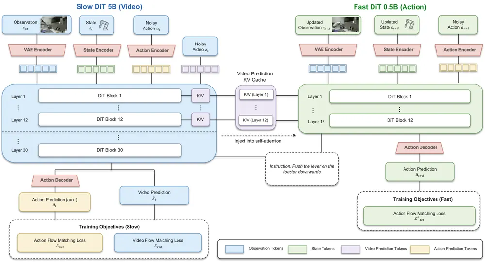
Facet-0: A Robotic Foundation Model for Contact-Rich Precise Manipulation
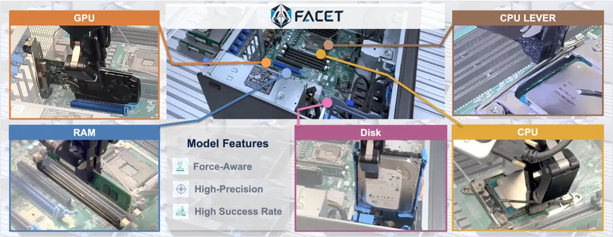
IMPACT: Attention Is the Interaction Map for Scalable Interaction-Aware World Model Training
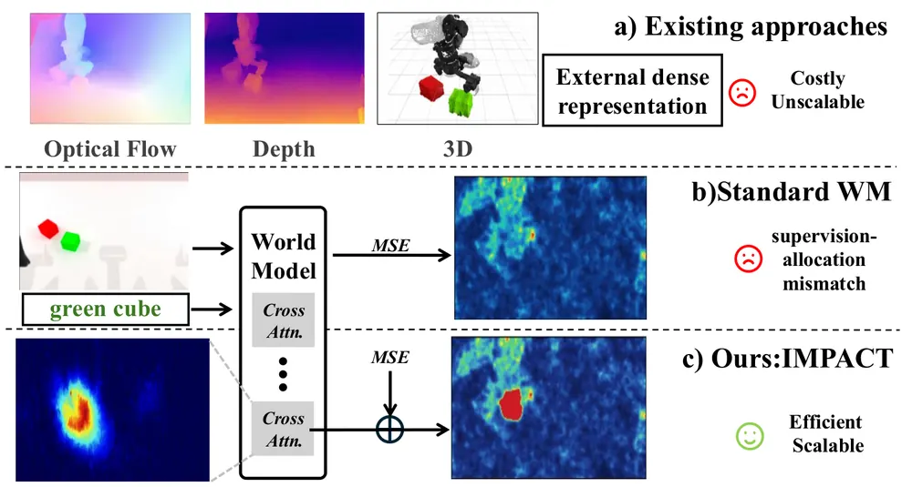
VOIM: Training-Free Open-Vocabulary 3D Instance Mapping for RGB-D and Monocular SLAM
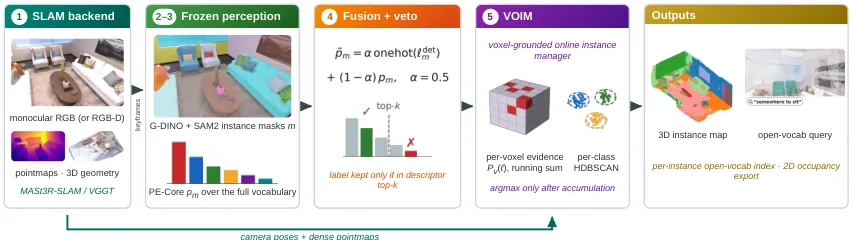
Dyn-3D: Unveiling and Resolving Ego-Motion Ambiguity in Vision-Language Models
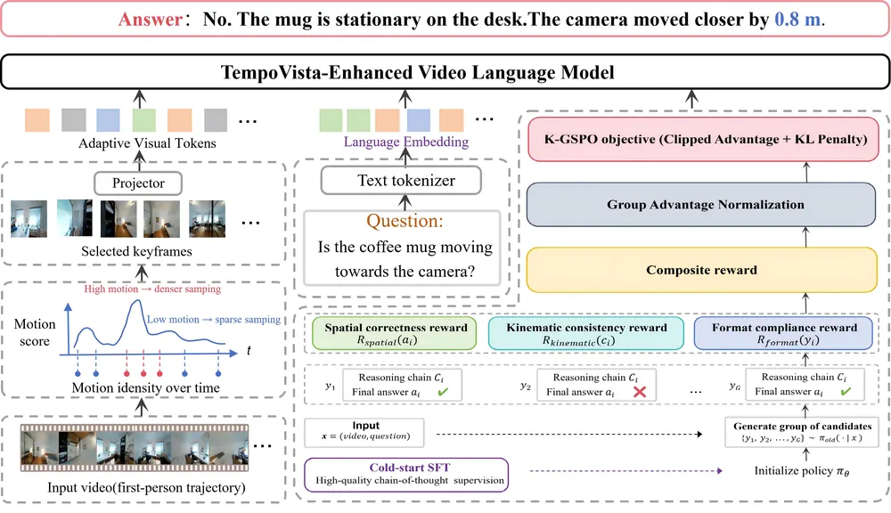
CoLT-Drive: Counterfactual Long-Tail Benchmarking and Knowledge-Preserving Adaptation for Driving Affordance Prediction
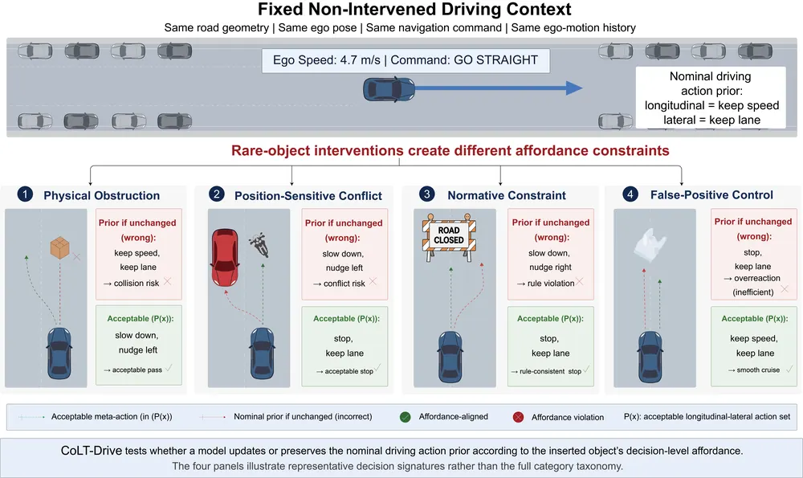
Potential-Guided Particle Steering for Negation-Constrained Dexterous Grasping
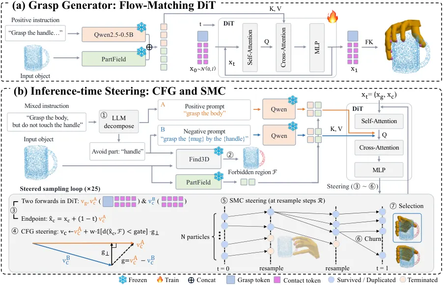
Seeing the World and the Self from Egocentric Video
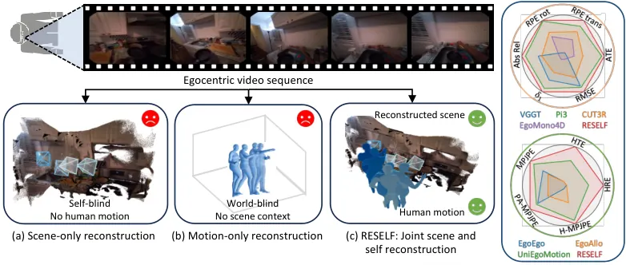
Knowing When to Stop: Adaptive Action Chunking via Internal Cross-Attention Dynamics in VLAs
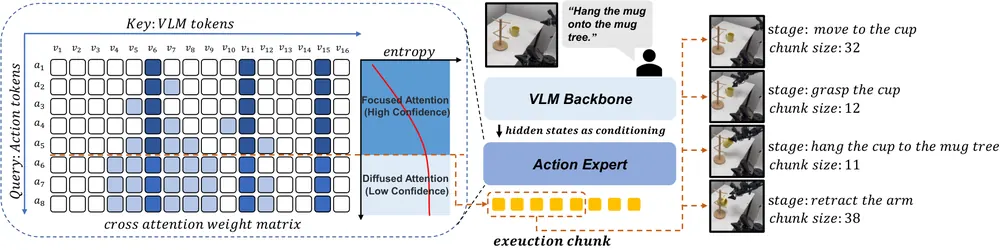
HitMem: Hierarchical Temporal 3D Memory with Multi-Modal Context-Aware Retrieval for Dynamic Environments
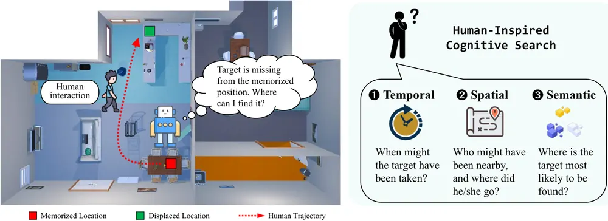
Towards Generalizable Visually Grounded Exploration of Household Devices
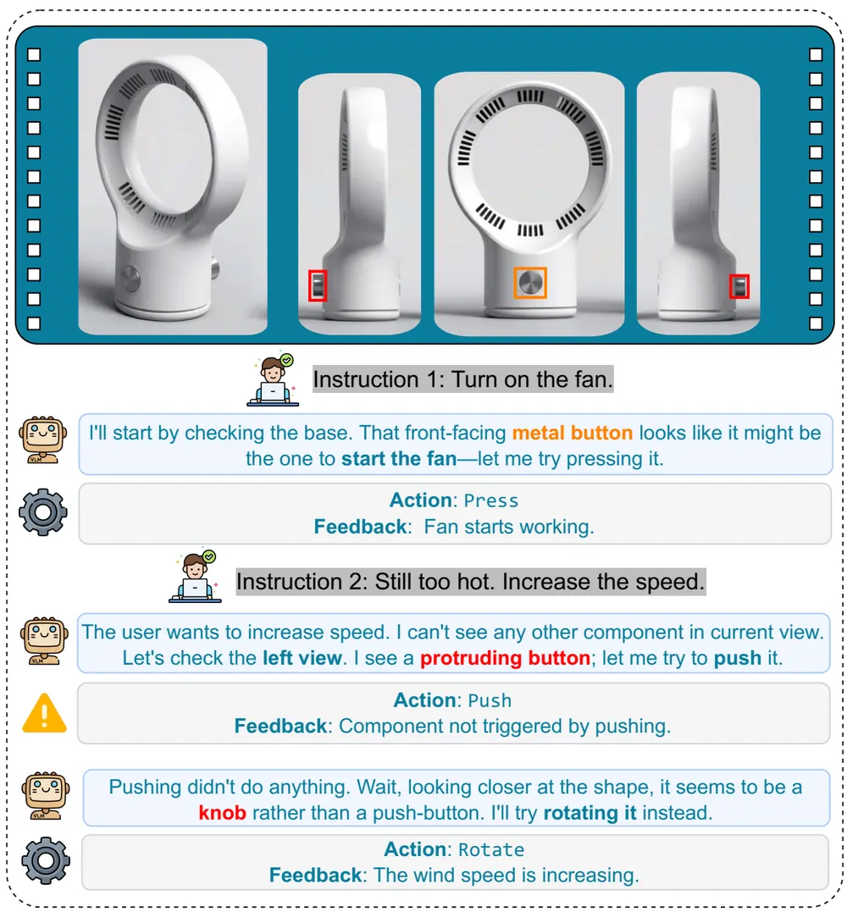
Dual Process Motion Planning
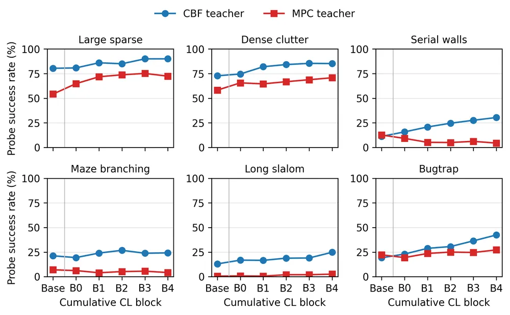
H3-World: Turning Language Understanding into World Control
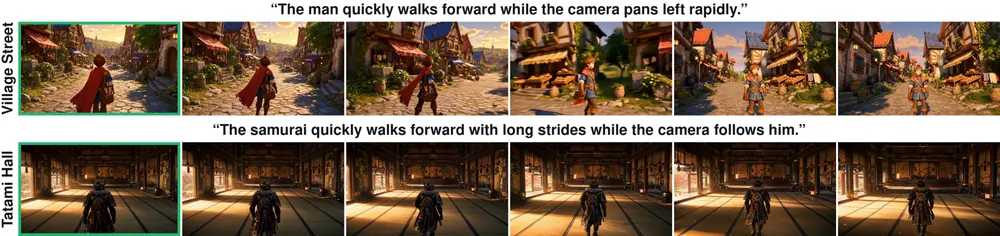
REFACTOR-VLA: Unsupervised Library Learning of Typed Motor Programs
EmbodiedSkills: A Unified Framework for Orchestrating, Training, and Deploying VLA Agents
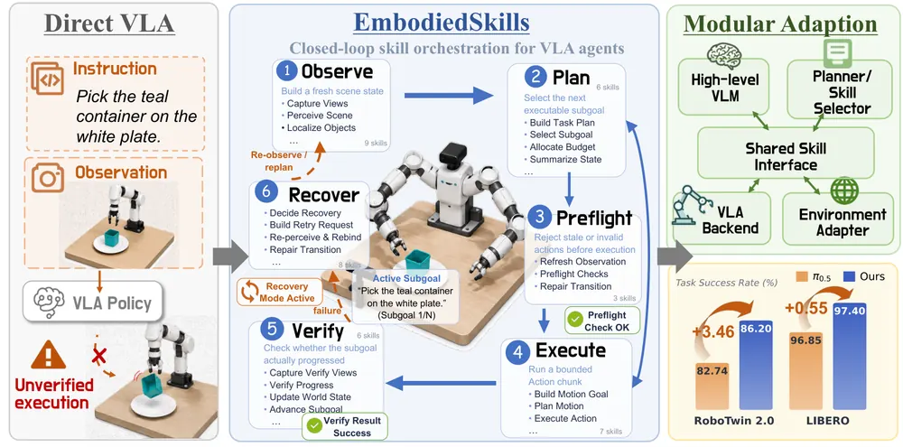
오늘의 핵심 연구 트렌드 종합
- world model의 예측 대상을 video에서 물리량·3D state로 넓히는 흐름 — ZimaBlue는 egocentric video로 world action model을 사전학습하고, IMPACT는 video world model의 학습 신호를 상호작용 영역에 재분배함. 둘 다 video latent 예측에 머물러 있어 object-centric 3D state나 force 같은 물리량으로 예측 대상을 확장할 여지가 큼을 시사함.
- contact/force를 관찰이 아니라 평가 대상으로 다루는 흐름 — Facet-0는 wrist-wrench를 critic이 채점하는 proposal로 다뤄 sub-mm 조립에서 실패를 구분함. force-aware VLA가 force를 입력에서 판단 대상으로 넘어가는 초기 사례임.
- 추가 학습 없이 forward pass 내부 신호로 test-time 판단을 내리는 흐름 — Adaptive Action Chunking의 cross-attention entropy plateau 탐지와 Potential-Guided Particle Steering의 classifier-free guidance(CFG)+sequential Monte Carlo(SMC) 기반 negation 제약이 대표적임. 둘 다 가중치를 안 건드리고 inference 시점 신호·샘플링만으로 policy 행동을 바꿈.
- counterfactual rendering으로 원인을 분리하는 벤치마크 설계 흐름 — Dyn-3D는 3D Gaussian Splatting으로 카메라 물리 변위와 시각 변화를 분리하고, CoLT-Drive는 동일 scene에 object만 삽입해 decision space 변화를 측정함. 관찰 대신 원인 변수를 통제하는 평가 설계가 여러 도메인에서 반복됨.
- static 가정을 깨는 memory·mapping 흐름 — HitMem은 물체가 옮겨진 뒤 외부 agent trajectory로 재탐색하고, VOIM은 open-vocab 3D instance 결정을 증거가 쌓일 때까지 유보함(defer-then-commit). 판단을 미루거나 갱신하는 원칙이 공통됨.
- VLA를 감싸는 hierarchical/verification 프레임워크가 여전히 반복되는 흐름 — EmbodiedSkills와 Dual Process Motion Planning은 LLM 기반 hierarchical skill 선택(SayCan류)·slow-fast 이중 프로세스 제어(SOFAI류) 개념을 VLA/motion planning에 형식화한 수준이라, formulation 신규성보다 엔지니어링 통합에 가까움.
유망 연구 방향 및 프로젝트 제안
Object-centric 3D world model로 video latent 대체하기 - research question: video latent 대신 object-centric 3D state(pose·contact·형상)를 예측 대상으로 삼는 world action model이 manipulation zero-shot 일반화에서 video latent 기반 모델보다 나은가 - 접근·novelty: ZimaBlue의 Slow-Fast 비동기 구조는 유지하되, Slow 모델의 예측 대상을 video pixel/latent에서 object-centric 3DGS state로 교체함. counterfactual reasoning(다른 action을 했으면 물체 상태가 어떻게 됐을지)을 latent rollout이 아니라 명시적 3D state 위에서 계산함 - 왜 지금·경쟁 prior works: ZimaBlue·H3-World·IMPACT 모두 video latent 예측에 머물러 구조화된 state 예측으로 넘어간 사례가 아직 없음. 이 공백이 이번 배치에서 반복 확인됨 - risk·target venue: 3D reconstruction 품질이 낮은 실환경에서 state 추정 오차가 world model 오차로 직결되는 리스크. CoRL/RSS 타겟
forward pass 내부 신호를 실패 예측·재관측 트리거로 통합하기 - research question: cross-attention entropy(관측 grounding 상실)와 wrench critic score(contact 이상)를 하나의 실패 신호 벡터로 합치면 개별 신호보다 실패를 더 일찍, 더 정확히 예측하는가 - 접근·novelty: Adaptive Action Chunking의 entropy plateau와 Facet-0의 distributional wrench critic을 같은 policy에서 동시에 계산해 replanning·active perception(재관측) 트리거로 결합함. 두 신호 모두 추가 학습 없이 forward pass에서 얻어짐 - 왜 지금·경쟁 prior works: 두 논문 모두 신호를 각자 다른 목적(chunk 길이 결정 vs. contact critic)에만 씀. 신호를 결합해 failure detection에 쓰는 시도는 아직 없음 - risk·target venue: 두 신호의 상관이 약하면 결합 이득이 없을 위험. 저자들도 entropy-MSE 상관이 통계적으로 유의하나 절대값은 크지 않다고 밝힘. CoRL/ICRA 타겟
Wrist-camera manipulation을 위한 counterfactual kinematic 벤치마크 - research question: 빠른 wrist-camera 이동이 있는 manipulation policy가 카메라 물리 변위를 얼마나 grounding하는지, 그리고 이것이 실패와 얼마나 상관되는지 - 접근·novelty: Dyn-3D의 3DGS counterfactual rendering(동일 시각 경로, 다른 물리 변위)을 실내 navigation이 아니라 로봇 팔 wrist-camera trajectory에 적용함. 실패 시점의 kinematic collapse(카메라 변위가 커지면 VLM의 spatial reasoning 정확도가 급격히 무너지는 현상) 여부를 진단 - 왜 지금·경쟁 prior works: Dyn-3D는 실내 navigation·VLM spatial reasoning만 다루고 manipulation wrist-camera에는 적용된 바 없음. spatial reasoning benchmark인 VSI-Bench도 이 축을 다루지 않음 - risk·target venue: 3DGS 재구성이 실제 wrist-camera의 근접·모션블러 조건에서 얼마나 안정적인지 미검증. CVPR/CoRL 타겟
메모리 갱신을 유보하는 defer-then-commit 원칙을 robot memory에 통합 - research question: 물체 위치·상태에 대한 판단을 증거가 쌓일 때까지 유보하는 원칙이, 즉시 판단 후 충돌 시 재탐색하는 기존 robot memory보다 오탐지를 줄이는가 - 접근·novelty: VOIM의 voxel soft-evidence 누적·지연 결정 방식을 HitMem의 carrier-carried 위계 그래프(물체와 이를 지지·운반하는 가구·agent를 연결한 구조)에 결합함. 즉시 pruning 대신, 시간에 따라 감쇠하는 activeness score(노드가 최근에 관측·갱신됐는지를 나타내는 값)와 함께 유보 임계값을 두어 재탐색 오탐을 줄임 - 왜 지금·경쟁 prior works: 두 논문 모두 각자의 문제(3D instance mapping vs. dynamic memory)에서 독립적으로 유사한 원칙(즉시 확정 vs. 유보)을 다루지만 아직 결합된 적 없음 - risk·target venue: 유보 시간이 길어지면 실시간 조작에 필요한 최신 정보 접근이 늦어지는 지연-정확도 trade-off가 핵심 리스크. ECCV/ICRA 타겟
오늘 반드시 읽어야 할 논문
- ZimaBlue: Evolving Generalizable World Action Models through Scalable Video Pre-training — egocentric video로 world action model을 사전학습해 DROID zero-shot 성공률을 36.1%→77.8%로 올림
- Facet-0: A Robotic Foundation Model for Contact-Rich Precise Manipulation — wrist-wrench를 critic이 평가하는 proposal로 다뤄 sub-mm 조립 5개 task에서 평균 82% 성공(baseline π0.5+RECAP-style 15%)
- IMPACT: Attention Is the Interaction Map for Scalable Interaction-Aware World Model Training — 외부 표현 없이 DiT 내부 cross-attention만으로 world model의 상호작용 영역 학습 신호를 재분배함
- VOIM: Training-Free Open-Vocabulary 3D Instance Mapping for RGB-D and Monocular SLAM — 결정을 유보하는 defer-then-commit 구조로 monocular까지 지원하며 ScanNet++에서 OVO-SLAM을 mIoU 7.3~11.7점 앞섬
- Dyn-3D: Unveiling and Resolving Ego-Motion Ambiguity in Vision-Language Models — 3DGS counterfactual rendering으로 VLM의 Kinematic Collapse(변위 커지면 정확도 69.71%→9.66%)를 정량 확인함
- Knowing When to Stop: Adaptive Action Chunking via Internal Cross-Attention Dynamics in VLAs — 추가 학습·샘플링 없이 attention entropy plateau만으로 execution horizon을 정해 실로봇 3 task 평균 성공률을 fixed-horizon 대비 47.5%→61.7%로 올림
- Potential-Guided Particle Steering for Negation-Constrained Dexterous Grasping — 학습 데이터 추가 없이 추론 시점 CFG+SMC만으로 negation 위반율을 57.9%→17.2%로 낮춤
- HitMem: Hierarchical Temporal 3D Memory with Multi-Modal Context-Aware Retrieval for Dynamic Environments — 외부 agent trajectory 정보로 이동된 물체를 재탐색해 Dyna-THOR에서 DynaMem(35.00%)을 SR 51.67%로 앞섬
전체 1차 스크리닝 결과 (515편, 점수순) 펼치기
| # | 제목 | 점수 | 🤖 | 분야 | 한 줄 근거 |
|---|---|---|---|---|---|
| 1 | ZimaBlue: Evolving Generalizable World Action Models through Scalable Video Pre-training | 83 | 9 | World Model | egocentric video로 world action model을 pretrain하고 real robot에서 성공률을 36.1%에서 77.8%로 올렸고 Slow-Fast 구조로 30Hz 실시간 제어까지 검증해서 scalability와 실증이 강함 |
| 2 | IMPACT: Attention Is the Interaction Map for Scalable Interaction-Aware World Model Training | 76 | 9 | World Model | MSE denoising objective의 supervision 불균형을 attention 기반 interaction map으로 재조정해 robot-arm·human-hand manipulation의 물리적 상호작용 예측력을 높인 world model 학습법임, 외부 표현이나 추가 annotation 없이 scalable하다는 점이 강점임 |
| 3 | Facet-0: A Robotic Foundation Model for Contact-Rich Precise Manipulation | 65 | 10 | Manipulation | wrist-wrench profile을 flow matching으로 함께 예측하고 distributional critic으로 RL post-training하는 contact-rich 조립용 로봇 foundation model이고 3개 embodiment·1000시간 규모 ManuFacet-1K로 학습해 0.5mm 정밀도 조립에서 최강 baseline 15% 대비 82% 성공률을 보임 |
| 4 | VOIM: Training-Free Open-Vocabulary 3D Instance Mapping for RGB-D and Monocular SLAM | 62 | 7 | 3D Vision | training-free로 voxel 단위 증거를 누적해 monocular까지 지원하는 open-vocabulary 3D instance mapping이고 online RGB-D SLAM 대비 mIoU를 4.8~11.7 올려 semantic mapping 우선 주제에 직접 부합함 |
| 5 | H3-World: Turning Language Understanding into World Control | 62 | 6 | World Model | 대규모 video generator가 이미 zero-shot으로 언어 지시에 반응한다는 관찰에서 출발해 temporal attention routing으로 언어를 정밀한 world control로 바꾼 방법인데 소량 데이터로 효율적이지만 게임 캐릭터·카메라 제어에 한정되어 로봇 행동 제어로의 전이는 미검증임 |
| 6 | Knowing When to Stop: Adaptive Action Chunking via Internal Cross-Attention Dynamics in VLAs | 60 | 9 | VLA | action expert의 cross-attention entropy가 평탄해지는 지점을 감지해 학습 없이 실행 horizon을 적응적으로 정하는 기법임, pi_0.5·X-VLA로 RoboTwin2.0·LIBERO·실로봇 3종에서 fixed/adaptive baseline 대비 성공률을 개선함 |
| 7 | EmbodiedSkills: A Unified Framework for Orchestrating, Training, and Deploying VLA Agents | 58 | 9 | VLA | VLA의 skill 선택을 실행 전 전제조건 확인·실행 후 결과 검증까지 포함하는 실행 제안으로 다루는 프레임워크이고 RoboTwin2.0 86.2%·LIBERO 97.4% 성공률을 보임, 다만 memory-dependent RMBench에서는 12.5%로 크게 낮아 long-horizon 한계를 스스로 드러냄 |
| 8 | Seeing the World and the Self from Egocentric Video | 58 | 6 | Embodied AI | egocentric video에서 장면 기하와 착용자 전신 동작을 동시에 metric frame으로 복원한 방법이고 embodied spatial reasoning과 밀접하지만 로봇이 아닌 사람 착용 카메라 데이터셋 기반임 |
| 9 | CoLT-Drive: Counterfactual Long-Tail Benchmarking and Knowledge-Preserving Adaptation for Driving Affordance Prediction | 58 | 5 | Embodied AI | long-tail object가 driving action에 미치는 영향을 counterfactual하게 측정하는 벤치마크와 LoRA MoE adaptation인데 새로운 problem formulation은 있으나 방법 자체는 기존 기법 조합에 가까움 |
| 10 | Dyn-3D: Unveiling and Resolving Ego-Motion Ambiguity in Vision-Language Models | 58 | 5 | Embodied AI | VLM이 큰 ego-motion에서 smooth trajectory prior에 과적합해 spatial reasoning이 무너지는 Kinematic Collapse 현상을 규명하고 카메라 물리량을 policy optimization에 넣어 교정한 방법인데 embodied spatial reasoning 우선 주제와 직접 관련됨 |
| 11 | REFACTOR-VLA: Unsupervised Library Learning of Typed Motor Programs | 55 | 10 | VLA | world model rollout 기반 Behavioral-Equivalence Kernel로 motor program을 클러스터링해 재사용 가능한 skill을 학습하는 VLA용 wake/sleep 프레임워크임, LIBERO에서 world model 크기 확대는 오히려 성능을 해치고 auxiliary contrastive loss가 핵심이라는 점을 스스로 밝혀 기술적 정직성은 있으나 world model이 188M/430M 규모로 작고 real-robot 검증은 없음 |
| 12 | HitMem: Hierarchical Temporal 3D Memory with Multi-Modal Context-Aware Retrieval for Dynamic Environments | 55 | 9 | Embodied AI | 물체 재배치를 감지해 계층적 시공간 3D memory를 시맨틱·공간·시간 특징으로 재검색하는 robot memory 프레임워크임, Dyna-THOR 벤치마크를 새로 만들었고 ECCV 2026 채택 논문임 |
| 13 | Potential-Guided Particle Steering for Negation-Constrained Dexterous Grasping | 55 | 8 | Manipulation | negation 지시(하지 말아야 할 부위)를 학습 데이터 없이 SMC와 classifier-free guidance만으로 처리하는 추론 시점 dexterous grasping 프레임워크임, NegGrasp 벤치마크에서 위반율을 57.9%에서 17.2%로 낮춤 |
| 14 | Dual Process Motion Planning | 55 | 8 | Robotics | System-1/System-2 이중 프로세스 관점으로 symbolic motion planner와 학습 기반 모듈을 metacognitive controller가 오케스트레이션하는 neuro-symbolic motion planning 구조임, TAMP 성격의 신규 formulation이지만 다양한 nonlinear benchmark 결과만 있고 실로봇 검증은 확인 불가함 |
| 15 | Towards Generalizable Visually Grounded Exploration of Household Devices | 55 | 7 | Embodied AI | 매뉴얼 없이 새 가전기기를 능동적으로 탐색해 시각적 affordance로 조작법을 알아내는 hypothesis-interaction-refinement 벤치마크를 제안함, 기존 VLM들이 의미 지식을 물리적 실행으로 못 옮긴다는 실패를 드러내 embodied exploration의 새로운 문제 정의로서 의미 있음 |
| 16 | Qwen-Drive-1.0: An Initial Step towards a Vision-Language Foundation Model for Autonomous Driving | 55 | 5 | VLA | 자율주행용 VLM에 BEV perception과 planning expert를 붙인 구조인데 기존 VLM 아키텍처를 그대로 쓰고 staged training으로 조합한 수준이라 novelty는 제한적임 |
| 17 | What, Where, and How: Probing Spatiotemporal Representations in Video Foundation Models | 55 | 5 | World Model | V-JEPA2와 VideoMAE-v2의 layer별 표현을 probing해 카메라 모션은 잘 인코딩하지만 직관적 물리는 거의 인코딩하지 못한다는 것을 밝힌 분석 논문이고 world model 표현의 한계를 구체적으로 드러내 연구 방향 설정에 유용함 |
| 18 | Streaming4D: Accelerate 4D World Models via Block-wise Video Generation and Incremental Reconstruction | 55 | 4 | World Model | video 생성과 3D 재구성을 block 단위로 동기화해 4D world model의 상호작용 지연을 줄인 방법인데 RTX 4090에서 1.24배 속도 개선에 그쳐 실질적 임팩트는 제한적임 |
| 19 | Teaching Vision-Language Models to Use the Scale They Are Given: Label-Free Equivariance Training for Metric Physical Reasoning | 55 | 4 | Multimodal | VLM이 metric scale을 절반만 반영하는 문제를 scale-equivariance로 label 없이 교정한 방법인데 embodied spatial reasoning에 필요한 metric grounding 개선이라 관련성 있음 |
| 20 | EvoGS: Modeling Deformation Evolution for Dynamic Gaussian Splatting | 52 | 4 | 3D Vision | 3DGS의 시간별 deformation을 독립 추정하지 않고 시간적 진화 과정으로 모델링해 큰 움직임에 강인하게 만든 방법이고 object-centric 4D representation 주제에 부합하지만 로봇 검증은 없음 |
| 21 | MeRoPE: Metric Rotary Position Embedding for Camera-Controlled Video Generation | 52 | 4 | World Model | 카메라 제어 video 생성에서 metric translation이 커지면 attention이 발산하는 문제를 norm-preserving positional encoding으로 해결한 방법이고 world model의 카메라 조건화에 관련 있지만 로봇 실증은 없음 |
| 22 | Physically Plausible Video Generation via Visual-Semantic Chain-of-Events Conditioning | 52 | 3 | Video | 물리적으로 타당한 video 생성을 event-centric causal chain으로 재구성한 방법인데 world model의 물리 추론과 맞닿아 있지만 로봇 행동 생성 검증은 없음 |
| 23 | DSG: Dynamic 3D Scene Graph Construction for Embodied Agents in Changing Indoor Environments | 50 | 8 | 3D Vision | 3D Gaussian 기반 장면 표현으로 물체 변화를 감지해 동적 3D scene graph를 갱신하고 LLM으로 공간관계를 추론함, DynTHOR·3RScan·real-world에서 기존 대비 우위를 보임 |
| 24 | FoldingAgent: Inferring Parametric Origami Procedures from Demonstration Videos | 50 | 3 | Embodied AI | VLM agent가 시연 영상에서 origami 절차를 재계획하며 추출하는 방법인데 tool-use와 re-planning 아이디어는 manipulation에 참고할 만하나 실제 로봇 조작 검증은 없음 |
| 25 | ADAPT: Agile Diffusion Action Priors for Robust and Steerable Online Text-Driven Humanoid Control | 48 | 8 | VLA | 텍스트 조건 humanoid whole-body control을 위해 diffusion action prior 위에 residual RL을 얹은 end-to-end closed-loop 프레임워크임, 동일 diffusion policy를 downstream task adaptation에도 재사용 가능함을 보임 |
| 26 | Non-Prehensile Throwing: A Reinforcement Learning Perspective | 48 | 8 | Manipulation | 미끄러짐·구름 접촉을 활용하는 non-prehensile throwing을 joint-space에서 직접 최적화하는 RL 정책이고 UR5e 실로봇에서 97%의 성공률로 최대 350cm 거리까지 던짐, IROS 2026 채택 논문임 |
| 27 | ProxPI: Proximal Prior Injection for Sampling-Based MPC under Learned-Prior Mismatch | 48 | 8 | RL | policy prior가 out-of-distribution일 때 sampling 분포를 policy에 직접 centering하지 않고 soft proximity cost로 반영하는 MPPI 개선이고 실로봇 실험으로 이론적 실패 모드 회복을 검증함, test-time optimization 우선 주제에 부합함 |
| 28 | On-the-Fly3R: Towards Robust Online 3D Reconstruction with Feed-Forward 3R Models for Large-Scale UAV Scenarios | 48 | 4 | 3D Vision | UAV 대규모 매핑에서 순서 없는 이미지 스트림도 처리하는 training-free online 3D reconstruction 프레임워크인데 5000장 이상으로 확장성은 있으나 방법은 기존 3R 백본에 검색·검증 모듈을 얹은 수준임 |
| 29 | Revisiting Cross-View Completion: Self-Supervised Pre-Training via Reconstruction Error Comparison | 48 | 4 | Representation Learning | cross-view completion과 masked autoencoding의 재구성 오차 차이를 co-visibility 신호로 활용한 self-supervised pretraining 방법이고 correspondence와 pose estimation 성능을 크게 올려 robot perception에 활용 가치가 있음 |
| 30 | VerNav: Verifier-First Low-Latency Vision-and-Language Navigation | 46 | 8 | Navigation | 매 스텝 autoregressive 생성 대신 batched verifier로 행동을 검증하는 저지연 VLN 프레임워크이고 R2R에서 decision latency를 10배 이상 줄이면서 경쟁력 있는 성능을 보임 |
| 31 | Accelerating Reinforcement Learning via MPC Solver-Gradient Guidance for Weights-varying MPC | 46 | 8 | RL | differentiable MPC의 solver gradient를 RL의 auxiliary guidance로 넣어 sample efficiency를 높인 방법이고 실물 레이싱 플랫폼 2종에서 최대 70.6% 적은 샘플로 PPO 최고 성능에 도달함, T-RO 투고 논문임 |
| 32 | Where Should Experience Live? Hierarchical Hebbian Memory for Continual Vision Transformers | 46 | 3 | Representation Learning | ViT에 Hebbian 기반 3단계 메모리 구조를 붙인 continual learning 방법인데 robot memory 주제와 개념적으로 닿아있지만 검증은 이미지 분류 벤치마크에 국한됨 |
| 33 | A System for Fast, Resilient, and Adaptable Loco-Manipulation Behaviors on Humanoid Robots | 45 | 8 | Manipulation | 휴머노이드 H1-2·Alex에서 런타임에 수정 가능한 affordance template 기반 behavior 아키텍처로 loco-manipulation을 시연한 시스템 논문이고 문 통과·공 색상 분류 등 실로봇 과제에서 학습 기반 최신 시스템과 경쟁력을 보임 |
| 34 | Selective Agent Guidance via Entropy: Learning Autonomous Policies from Imperfect VLM Teachers | 45 | 5 | RL | 불확실할 때만 비싼 VLM teacher에 질의해 얻은 행동을 advantage로 가중해 경량 RL policy로 증류하는 방법임, sparse-reward visual reasoning·navigation task에서 검증했고 배포 시 VLM 없이 동작해 teacher를 능가하는 경우도 보임 |
| 35 | Efficient and Robust Absolute Pose Estimation via Gravity-Prior-Driven Transformation Decoupling and Pose Refinement | 45 | 4 | 3D Vision | gravity prior로 6DoF pose 추정을 4DoF로 단순화하고 ORB-SLAM2에 통합해 drift를 줄인 방법인데 robotics의 pose estimation에 바로 쓸 수 있으나 novelty는 기존 파이프라인 최적화 수준임 |
| 36 | Beyond the Image Plane: World-Grounded Queries for Multi-Object Tracking | 45 | 3 | 3D Vision | 3D 장면 기하를 query에 임베딩해 image plane의 한계를 넘는 multi-object tracker인데 자율주행 인식에 참고할 만하나 로봇 조작 연관은 낮음 |
| 37 | Uncovering Understanding-Generation Synergy in Native Unified Multimodal Models: From Representation, Task to System | 45 | 2 | Multimodal | unified multimodal model에서 이해와 생성 목적이 representation·task·system 수준에서 언제 시너지를 내는지 통제된 실험으로 규명한 분석 논문이고 구조 설계 원칙은 일반화 가능하지만 robotics 응용은 아님 |
| 38 | Evaluating Multimodal LLMs as Generalist Vision-Language-Action Agents for Drone Control: Commanding, Approaching, Tracking and Searching | 42 | 8 | VLA | MLLM을 드론 제어 루프에 직접 넣어 접근·추적·탐색·다중드론 명령까지 평가한 벤치마크이고 소형 모델이 비행 자체는 잘하지만 도착 선언 같은 프로토콜 준수에서 실패한다는 점을 밝힘, embodied VLA 평가 연구임 |
| 39 | Does Imitation Learning Preserve Temporal Robustness in Dexterous Manipulation? An Expert-Learner Comparison Across Task Execution Speeds | 42 | 8 | Manipulation | imitation learning 정책(ACT)이 전문가 대비 실행 속도 변화에서 시간적 강건성을 유지하는지 비교한 실증 연구이고 동일한 nominal 성공률에도 최대 속도에서 ACT 성공률이 전문가보다 훨씬 크게 떨어짐을 보임, 실패 원인을 삽입 정렬 오류로 특정함 |
| 40 | A Closed-Loop Evaluation of Capability Loss and Recovery in Compressed Driving Policies | 42 | 5 | RL | POMDP belief-state 주행 정책을 pruning-distillation-quantization 파이프라인 단계별로 closed-loop 주행 curriculum에서 평가해 어느 압축 단계에서 주행 능력이 사라지는지 분석함, Gym-Duckietown sim 한정이지만 압축된 embodied policy의 안전성 평가 방법론이 참고할 만함 |
| 41 | CERF: Communication-Efficient and Retraining-Free Collaborative Perception | 42 | 3 | Navigation | 통신량을 95% 줄이면서 retraining 없이 이종 에이전트 간 협력 인식을 가능하게 한 방법인데 자율주행 collaborative perception에 국한되고 robot manipulation과는 거리가 있음 |
| 42 | Exploring Collaboration between a language and a non-language agent | 42 | 3 | Multimodal | 체스 도메인에서 LLM과 non-language agent를 verbalization 없이 latent state로 연결해 verbalization debt를 해소함. VLA에서 언어모델과 연속 상태 에이전트를 결합하는 문제와 개념적으로 맞닿아 있음 |
| 43 | HyperWorld: Hypergraph-Structured State Serialization Improves Learned Textual World Models | 42 | 3 | World Model | 텍스트 환경 world model의 상태 직렬화를 hypergraph 단위로 구성해 OOD 일반화와 planning 성공률을 높인 연구임. world model 우선 주제와 맞닿으나 embodied 실환경은 아님 |
| 44 | Soft-Argmax for the Projective Plane via the Veronese Embedding | 42 | 2 | 3D Vision | 직선의 antipodal ambiguity를 Veronese embedding으로 해소하는 soft-argmax 기법인데 일반화 가능한 기하학적 도구지만 robotics 검증은 없음 |
| 45 | Feed-Forward Multi-view Multi-person Reconstruction with Contrastive Human-Aware 3D Representation | 42 | 2 | 3D Vision | 다중 시점 다인 3D 복원을 contrastive human-aware 3D 공간에서 feed-forward로 수행하는 방법이고 occlusion에 강인하지만 robotics 적용은 없음 |
| 46 | EvoSCM: Scientific Belief Revision Through Causal Model Evolution and Experimentation | 42 | 2 | AI | LLM 과학 agent가 자유 텍스트 대신 명시적 structural causal model 집단을 유지하며 개입 설계와 falsification으로 causal belief를 갱신하는 프레임워크임, counterfactual/causal reasoning을 agent에 내재화한 새 formulation이나 로봇이 아닌 물리 세계 discovery benchmark에서만 검증함 |
| 47 | ViTAL-X: Video-Text Alignment with Cross-Modal Temporal Edits | 42 | 1 | Video | video-text 모델의 temporal blindness를 self-supervised negative로 교정하는 방법인데 효율성은 좋으나 robotics 적용은 없음 |
| 48 | The Visual Insensitivity Gap: Diagnosing When Vision-Language Models Fail to Use Visual Evidence | 42 | 1 | Multimodal | VLM이 시각 증거를 실제로 쓰는지 sample 단위로 진단하는 지표를 제안했는데 vision-ignoring 실패를 정량화한 점은 흥미롭지만 robotics 적용은 없음 |
| 49 | A Wearable Pneumatic Device for Continuous, Closed-Loop, Bidirectional Tactile Interaction | 40 | 7 | Manipulation | 센싱과 액추에이션을 겸하는 웨어러블 공압 촉각 장치이고 원격조작 실험에서 압력 23.1%·소요시간 27.4% 감소를 보임, 하드웨어 중심 tactile perception 연구임 |
| 50 | Provably Safe Sim-to-Real Transfer | 40 | 6 | RL | reward-free safe RL로 sim-to-real 전이 시 실환경 데이터 수집 안전성을 이론적으로 보장하는 알고리즘임, 로보틱스를 응용 예시로 언급하나 본 실험은 로봇 없이 이론적 sample complexity bound 중심임 |
| 51 | DualDiff3D: Dual Structure-Appearance Diffusion Priors for Reliability-Enhanced 3D Gaussian Splatting | 40 | 3 | 3D Vision | 3DGS의 sparse view 문제를 구조와 외관을 분리한 dual diffusion prior로 보완한 방법이고 novel view synthesis 품질은 개선했지만 robotics 검증은 없음 |
| 52 | Good Memory Has ECC: Evaluating the Memory of Vision-Language Models Beyond Accuracy | 40 | 3 | Multimodal | VLM의 memory를 정확도만이 아니라 효율·압축·보정 세 축으로 평가하는 벤치마크이고 long-horizon robot memory 평가에 참고할 만하지만 로봇 실험은 없음 |
| 53 | Adapting Without Gradients: Affine Statistics Transport and What Its Certificate Can Tell You | 40 | 3 | CV | gradient 없이 frozen model의 class 통계를 affine transport로 test-time adaptation하는 방법이고 inference-only 하드웨어 배포 상황에서 test-time optimization 우선 주제와 관련이 있음 |
| 54 | StreamScout: Learning When to Look Deeper for Streaming Video Understanding | 40 | 2 | Video | streaming video QA에서 query별로 memory 접근 깊이를 adaptive하게 결정하는 방법인데 robot 실시간 인식에 아이디어는 참고할 만하나 로봇 실험은 없음 |
| 55 | WHALE: A Simple Recipe for Joint Harness-Weight Optimization | 40 | 2 | LG | agent의 weight와 harness code를 번갈아 최적화하는 프레임워크이고 어느 쪽이 병목인지 실증적으로 보여 agentic 시스템 설계에 시사점이 있지만 robotics 응용은 아님 |
| 56 | A Lagrangian View of Flow Matching | 40 | 1 | Generative Models | flow matching을 Lagrangian 관점으로 재해석한 이론 논문이라 왜 straight-line flow가 되는지 설명력은 있지만 robotics 응용과는 거리가 멂 |
| 57 | Scalable Rao-Blackwellized Online Planning for High-Dimensional POMDPs | 38 | 7 | RL | Rao-Blackwellized POMDP 온라인 계획을 hybrid continuous-discrete belief로 확장해 고차원 상태에서 분산을 줄인 방법이고 FastSLAM 2.0과 결합해 탐색-구조 과제에서 검증함, inference-time planning 우선 주제에 부합함 |
| 58 | SG-AMP: Scene-Graph-Guided Active Perception and Semantics-Aware Motion Planning for Pepper Plants | 38 | 7 | 3D Vision | 고추 식물의 미관측 peduncle 부착부를 scene graph로 가설화해 능동 시점 계획으로 근접 센싱을 유도하는 방법이고 panoptic mapping·불확실성 추정을 결합함, active perception·scene graph 우선 주제에 부합하는 농업 로봇 응용임 |
| 59 | Deploying and Evaluating a Smart-Agriculture Agentic Engine for Full-Season Soybean Farm Operations | 38 | 4 | Embodied AI | 농업 현장에 배포한 event-driven world model 기반 agentic 시스템으로 실제 농기계·드론·센서를 통합한 실배포 사례임, robot manipulation은 아니지만 embodied multi-agent 제어와 world model 활용이 참고할 만함 |
| 60 | Puppeteer: Object-Grounded Posture-Aware Co-Speech Gesture Generation | 38 | 2 | CV | object-grounded co-speech gesture 생성 diffusion 모델이라 embodied 요소가 있지만 아바타 애니메이션 목적이라 로봇 조작과는 거리가 있음 |
| 61 | SpatialGuard: Harness-Guided Verifiable Spatial Reasoning for Text-to-Image Generation | 38 | 2 | CV | 3D layout을 검증 가능한 중간 표현으로 두고 text-to-image의 공간 제약을 유지하는 프레임워크이고 spatial reasoning 아이디어는 있으나 생성 응용에 국한됨 |
| 62 | Beyond Language Priors: Diagnosing and Fixing Visual-Origin Hallucinations in Multimodal LLM | 38 | 1 | Multimodal | MLLM hallucination 원인을 language prior가 아니라 visual feature misalignment로 재규명한 진단 논문인데 적용 범위가 captioning/VQA에 국한됨 |
| 63 | Separating perception from reasoning in vision-language models: a model-free render ceiling for crystal structures | 38 | 1 | Multimodal | VLM의 지각과 추론 오류를 분리하는 model-free render ceiling 기법인데 결정체 구조 도메인에 한정된 진단 도구임 |
| 64 | ViTAMINS: An Empirical Study of Training Self-Supervised Vision Transformers with Synthetic Hard Negatives | 38 | 1 | Representation Learning | synthetic hard negative를 self-supervised ViT pretraining에 넣어 representation을 개선한 방법이고 contrastive learning의 대안성을 보였지만 robotics 검증은 없음 |
| 65 | Do Multimodal LLMs See Before They Read? Diagnosing Contextual Sycophancy | 38 | 1 | Multimodal | 이미지-텍스트 충돌 시 MLLM이 텍스트에 굴복하는 현상을 정량 진단하고 witness 분리로 완화한 연구임. robotics와 무관한 순수 진단·벤치마크 논문임 |
| 66 | Risk-Aware Decision-Making for Autonomous Overtaking: A World Model-Based Mixture-of-Experts Framework | 35 | 5 | World Model | world model 기반 다단계 rollout으로 추월 시 누적 위험을 궤적 단위로 평가하는 mixture-of-experts 프레임워크임, 자율주행 도메인이고 real-world 검증은 없음 |
| 67 | Residual Kalman Dynamics for Event-Based UAV Forecasting | 35 | 3 | Navigation | event camera로 UAV bounding box를 예측하는 residual Kalman 방법이고 UAV 지각에 관련 있지만 방법 자체는 단순 residual 보정 수준임 |
| 68 | Monocular Depth Estimation from a Single Image: Progress and Opportunities | 35 | 3 | 3D Vision | 단안 depth estimation 발전을 정리한 survey 논문이고 robot perception에 참고 자료로 유용하지만 새로운 방법 제안은 아님 |
| 69 | Towards a Belief-Based World Model for LLM Agents | 35 | 3 | World Model | partial observability 하에서 simulation만으로는 현재 상태의 불확실성을 못 담는다는 문제의식으로 LLM agent에 belief를 노출하는 world model을 제안함, 물리 로봇 실험은 없지만 test-time planning과 world model 결합 아이디어가 참고할 만함 |
| 70 | Neuro-Symbolic Geometric Abstraction (NeuSOGA): From Observations to Symbolic Mathematical Representations | 35 | 3 | 3D Vision | 기하학적 관찰을 topology-guided 구조 발견과 Segment Anything으로 topological·geometric abstraction을 거쳐 해석 가능한 symbolic spline 표현으로 변환하는 프레임워크임, object-centric 3D representation에 참고될 수 있으나 로봇 조작 실험은 없음 |
| 71 | CQF-HMR: Continuous Quaternion Flows for Probabilistic 3D Human Mesh Recovery from a Single Image | 35 | 2 | 3D Vision | 단일 이미지에서 확률적 3D human mesh를 quaternion 제약 normalizing flow로 복원하는 방법이고 robotics와는 간접적으로만 연관됨 |
| 72 | CameraEditor: Camera-Controlled Image Editing via Video-Prior Sequential Modeling | 35 | 2 | CV | video diffusion의 시간적 일관성을 이용해 카메라 파라미터 기반 image editing을 가능하게 한 방법인데 편집 응용이라 robotics 연관은 간접적임 |
| 73 | Safin-1: Safety from Within through Memory-Native State Evolution | 35 | 2 | LG | foundation model에 memory routing으로 안전성을 내재화하는 아키텍처인데 robot memory와 개념적으로 닿아있지만 LLM safety 응용에 국한됨 |
| 74 | The Rise of Verbal Reinforcement Learning | 35 | 2 | NLP | 언어 피드백이 에이전트 lifecycle에서 작동하는 세 축을 정리한 survey이며 language feedback 기반 learning 주제와 직접 맞닿으나 실증 기여는 없음 |
| 75 | UI-Venus-2 Technical Report | 35 | 2 | Embodied AI | 모바일·웹·데스크톱을 아우르는 GUI 에이전트 파운데이션 모델을 환경·태스크·검증 세 축에서 스케일업함. 언어-행동 폐루프 구조가 VLA와 유사하나 물리적 조작은 아님 |
| 76 | Solaris: Towards Interfaces That Are Generated, Not Coded | 35 | 1 | World Model | 마우스 상호작용을 조건으로 UI 화면을 프레임 단위로 생성하는 interface world model이고 개념은 흥미롭지만 물리적 world model이 아니라 로봇 적용과는 거리가 있음 |
| 77 | RingMoClaw: An Experience-Inspired Multi-Agent Framework for Self-Evolving Research in Remote Sensing | 35 | 1 | CV | 원격 탐사 모델 개선을 자동화하는 self-evolving multi-agent 프레임워크이고 domain이 원격 탐사에 국한됨 |
| 78 | Visual Attention Faithfulness in Vision-Language Models is Heterogeneous | 35 | 1 | Multimodal | VLM의 visual attention이 모델마다 다른 처리 모드를 보인다는 분석 논문이고 해석가능성 연구임 |
| 79 | Slow to See, Slow to Suppress: Understanding the Effects of Modality in Context-Memory Conflicts | 35 | 1 | Multimodal | VLM이 텍스트 vs 이미지 개체에 대해 context-memory 충돌을 비대칭적으로 처리함을 보인 흥미로운 진단 연구임 |
| 80 | From Base Rollouts to RL Reasoning: A Budgeted Search Perspective | 35 | 1 | RL | RLVR의 이득 대부분이 base 모델이 탐색으로 이미 도달 가능한 지점으로의 샘플링 효율 이동임을 여러 모델·벤치마크에서 검증함 |
| 81 | ReNFT: Repairing Mode Collapse in Reward Post-Training via Internal Probability-Mass Recalibration | 35 | 0 | LG | reward post-training으로 diffusion 모델이 mode collapse될 때 내부 확률 질량을 재배치해 다양성을 복원하는 방법이고 새로운 학습 패러다임이지만 robotics 적용은 없음 |
| 82 | Beneath the Diff: Diagnosing and Mitigating Algorithmic Mode Collapse in Code-Level Autonomous Research Loops | 35 | 0 | NLP | 코드 수정 기반 자율 연구 루프에서 mode collapse를 진단하고 DAPS로 완화함. 방법론은 흥미로우나 robotics와 무관함 |
| 83 | Exploring Nonlinear Body Oscillations for Natural Quadruped Gaits | 34 | 6 | Embodied AI | 4족 로봇 eBert의 비선형 정규모드를 설계 단계에서 예측해 여러 gait가 기계적 공명만으로 발생함을 시뮬레이션·하드웨어로 검증함, embodied intelligence 관점의 형태-제어 결합 연구임 |
| 84 | CrossFeat: Bridging Imaging Modalities in Feature Descriptor Space | 33 | 1 | 3D Vision | 멀티모달 keypoint descriptor 간 매핑 함수 학습 방법이고 로봇 센서 융합에 쓸 수는 있지만 직접적 robotics 검증은 없음 |
| 85 | A Glance Is All You Need: Single-Pass Fine-Grained Image Captioning with SimLoss | 33 | 1 | Multimodal | embedding space contrastive loss로 single-pass fine-grained captioning 속도를 20배 높인 방법이고 효율화 위주라 novelty는 제한적임 |
| 86 | Latent Recurrent Thoughts: Recurrent Refinement of Proposed Latents for Reasoning with Frozen LLMs | 33 | 1 | LG | 고정된 LLM decoder를 두고 작은 recurrent network가 continuous latent thought를 반복 정제해 넣어주는 추론 패러다임임, chain-of-thought의 discrete token 제약을 우회하는 새로운 inference 구조라는 점은 흥미롭지만 robotics 적용은 없음 |
| 87 | On the Design Fundamentals of Pixel Text Representation Learning | 33 | 0 | Multimodal | pixel 공간에서 텍스트를 읽는 encoder 설계 원칙을 체계적으로 분석한 논문이고 문서 이해에 국한됨 |
| 88 | Lagged Coupling: Internal Representations Become Readable Before They Become Causal | 33 | 0 | NLP/LG | Pythia 전체 스위트에서 표현이 읽을 수 있게 되는 시점이 인과적으로 유효해지는 시점보다 항상 앞섬을 사전등록 방식으로 입증한 해석가능성 연구임 |
| 89 | AM-Bench: A Modular Simulation Suite and Benchmark for Aerial Manipulation Policy Learning | 32 | 6 | Manipulation | 공중 조작(aerial manipulation)을 위한 모듈형 시뮬레이션 벤치마크이고 embodiment·제어·정책 상호작용을 시스템 수준에서 평가함, 니치 도메인의 벤치마크 논문임 |
| 90 | Behavior--Realization Separation for Constrained Physical Human--Robot Interaction | 32 | 6 | Manipulation | physical HRI에서 desired-behavior 계층과 constrained realization 계층을 분리한 receding-horizon QP를 Franka FR3에서 검증함, 제약 위반을 impedance/admittance 대비 크게 줄임 |
| 91 | Dense Process Supervision for Search Agents via Fact Utility Estimation | 32 | 2 | RL | 탐색 에이전트의 credit assignment를 사실 단위 utility로 dense reward화한 방법이며 long-horizon 보상 설계에 참고 가치가 있음 |
| 92 | Vision Is Not Overhead: One-Pass Block Drafting for Lossless Speculative Decoding in Vision-Language Models | 32 | 2 | Multimodal | VLM에 대해 vision-language state를 그대로 활용하는 block-diffusion 기반 lossless speculative decoding을 제안해 최대 2.93배 가속함, embodied VLM 추론 효율화에 참고할 만하지만 robot task 실험은 없음 |
| 93 | GenScale: A Benchmark for Relative Object Scale in Image Generation and Editing | 32 | 1 | CV | 이미지 생성에서 상대적 물체 크기 오류를 측정하는 벤치마크이고 생성 품질 문제라 robotics 연관성은 낮음 |
| 94 | Restrict, Don't Retrain: Inference-Time VLM Guidance for Zero-Shot Aerial Segmentation | 32 | 1 | CV | 소비자용 GPU에서 VLM으로 항공 영상 segmentation을 보조하는 추론 기법이고 robotics 연관성은 낮음 |
| 95 | TempCloze: Can Video-LLMs Identify the Missing Middle? | 32 | 1 | Video | video-LLM이 언어적 shortcut 없이 순수 시각 temporal reasoning을 하는지 측정하는 cloze 벤치마크이고 언어 편향을 줄인 설계는 좋으나 robotics 적용은 없음 |
| 96 | Flawed in Nature, Perfect through Evolution | 32 | 1 | LG | AI/ML 모델 군집에 의도적 mutation을 주어 non-stationary 환경에서 regret을 줄이는 진화적 원리를 이론적으로 증명한 논문이고 일반화 가능한 개념이지만 robotics 검증은 없음 |
| 97 | Group Adaptive Clipping Policy Optimization | 32 | 1 | RL | GRPO의 고정 clipping이 어려운 문제의 희소한 정답 rollout을 과도하게 억제하는 문제를 advantage 기반 adaptive clipping으로 해결한 방법이고 수학·코드 추론에서 검증되어 robot RL로의 전이는 미확인임 |
| 98 | Uncovering and Mitigating Aggregation-Induced Reward Hacking in Multi-Reward Reinforcement Learning | 32 | 1 | RL | 다중 보상 aggregation이 유발하는 reward hacking을 진단하고 적응적 가중치 재분배로 완화함. RL 일반 원리로서 참고 가치는 있으나 robot RL 적용은 아님 |
| 99 | Context-Grounding Gains Are Mediated by Pre-existing Machinery: Auditing GRPO, SFT, and DPO | 32 | 1 | RL | GRPO·SFT·DPO의 context-grounding 개선이 새 메커니즘이 아니라 기존 회로 강화임을 밝힌 정밀 감사 연구임 |
| 100 | When Modality Gap Reduction Fails: Prediction-Level Hubness in CLIP | 32 | 1 | Multimodal | CLIP의 modality gap 축소가 오히려 예측을 소수 클래스에 집중시키는 hubness 실패를 규명한 분석 연구임 |
| 101 | Advanced Pixel Diffusion Model with Guided Sparse Global Refinement | 32 | 0 | CV | pixel-space diffusion에서 sparse global refinement로 효율을 높인 이미지 생성 논문이고 robotics와 무관함 |
| 102 | Training-Free Inpainting Across Domains with a Frozen Text-to-Image Diffusion Model | 32 | 0 | CV | 고정된 text-to-image diffusion으로 도메인 간 inpainting을 수행하는 training-free 방법이고 robotics와 무관함 |
| 103 | SinkPruner: Sink-Free Visual Token Pruning for Multimodal Large Language Models | 32 | 0 | Multimodal | high-norm outlier token을 걸러내는 training-free visual token pruning 방법이고 효율화 위주라 robotics 적용은 없음 |
| 104 | Reliability Challenges in Diffusion Vision-Language Models | 32 | 0 | Multimodal | diffusion 기반 VLM의 hallucination과 bias를 처음 체계적으로 평가한 논문이고 robotics와 무관함 |
| 105 | Beyond Object Selection:Markerless Gaze-based Robot Placement at Arbitrary Position | 30 | 6 | Manipulation | gaze 기반 로봇 배치에서 pose 정확도가 task 정확도로 직결되지 않음을 보이고 GSIE라는 task-level 지표를 제안함, assistive manipulation HRI 연구임 |
| 106 | Connectivity-Aware Graph Extension for Decentralized Multi-Robot Exploration | 30 | 6 | Navigation | 간헐적 통신 환경에서 frontier connectivity 기반으로 exploration graph를 확장해 다중 UAV 영역 분할을 안정화한 방법임, 시뮬레이션 검증만 있음 |
| 107 | Fleets Need a Context Plane: Rethinking Cooperative Perception for Autonomous Drones | 30 | 5 | Navigation | 드론 편대의 협력 인지에서 상황(context)에 따라 feature 공유 정책을 런타임에 바꾸는 context plane 인터페이스임, 5-10%의 바이트만으로 full-sharing 정확도를 유지함 |
| 108 | One Print, Many Moves: Monolithic Origami-inspired Folding Actuator for Composable Soft Multi-DoF Systems | 30 | 5 | Manipulation | 단일 재질 3D 프린팅만으로 방향별 강성을 다르게 설계한 origami 액추에이터로 다중 DoF 소프트 시스템 3종을 시연함, 하드웨어 설계 논문임 |
| 109 | GUI-CC: Benchmarking Contextual Consistency of GUI World Models as Agent Environments | 30 | 3 | World Model | GUI world model을 next-screen 예측이 아니라 multi-step 환경으로 롤아웃했을 때의 문맥 일관성을 평가하는 벤치마크임, world model 평가 방법론이 GUI 도메인이라 로봇 응용은 아님 |
| 110 | LLM-Driven Autonomous Vehicles Inherit Human Driver Biases in Pedestrian Yielding: Results and Implications From A New Benchmark | 30 | 3 | Embodied AI | LLM/VLM 기반 자율주행 보행자 양보 결정에 인간 운전자 편향이 그대로 재현됨을 새 벤치마크로 보인 논문임, 실제 로봇 제어 기법 제안은 없고 bias audit에 초점을 둠 |
| 111 | Explore More, Drift Less: Outcome-Only Reinforcement Learning Can Suffice for Long-Horizon Interactive Agents | 30 | 2 | RL | long-horizon LLM 에이전트를 outcome-only RL만으로 학습시키는 CANOPY 기법임, AppWorld·SWE-bench 등 소프트웨어 에이전트 대상이라 로봇 RL과는 거리 있음 |
| 112 | EM^2Mem: Event-Centric Multimodal Memory for Large Language Models | 30 | 2 | Multimodal | event 중심 멀티모달 메모리로 장영상 QA의 정확도와 지연시간을 함께 개선함. robot memory 주제와 표현 방식은 유사하나 도메인은 영상 QA임 |
| 113 | Vision-Language-Guided Pseudo-Labels for Unsupervised Domain Adaptation in Semantic Segmentation for Waste Sorting | 30 | 1 | CV | SAM과 CLIP으로 pseudo-label을 생성해 폐기물 분류 segmentation을 domain adaptation하는 파이프라인이고 산업 응용에 국한됨 |
| 114 | Does This Moment Justify the Recommendation? Counterfactual Behavior-Grounded Evidence Retrieval for Personalized Video Recommendation | 30 | 1 | Video | 개인화 영상 추천에서 counterfactual하게 근거 구간의 유효성을 검증하는 방법인데 counterfactual reasoning은 우선 주제지만 응용 도메인이 추천 시스템이라 robotics와 거리가 있음 |
| 115 | Compressing AI Traffic: Standardized Neural Network Coding of Visual-Token Representations in Split Vision-Language Inference | 30 | 1 | Multimodal | VLM의 visual token을 표준 codec으로 압축해 split inference 통신량을 98%까지 줄이는 실험인데 시스템 최적화 수준임 |
| 116 | How Temporal Correlations Shape Memory in Linear Recurrent Neural Networks | 30 | 1 | LG | 선형 순환 신경망에서 입력의 시간적 상관관계가 memory 형성 여부를 결정하는 임계값을 이론적으로 규명한 논문이고 robot memory 설계에 참고할 이론적 통찰이 있으나 순수 이론 수준임 |
| 117 | DualStake: Dual-Path Confidence Calibration in Deep Research Agents | 30 | 1 | NLP | 심층 연구 에이전트의 evidence confidence와 answer confidence를 함께 보정하는 dual-path 방법이며 신뢰도 보정 문제로 failure detection과 결이 닿음 |
| 118 | Explore Before Committing: Hypothesis-Guided Search for Deep Research Agents | 30 | 1 | NLP | 심층 연구 에이전트가 단일 경로에 조기 고착하는 실패를 가설 기반 병렬 탐색으로 완화한 연구이며 active exploration 설계와 결이 닿음 |
| 119 | Long-Horizon State Tracking in LLMs: Executing MD5 through a Deep Sequence of Dependent Tool Calls | 30 | 1 | NLP/LG | 196단계 의존적 tool call에 걸쳐 MD5를 직접 계산시켜 장기 상태 추적 능력을 엄밀히 측정한 연구이며 long-horizon 상태 추적이라는 문제의식이 TAMP와 결이 닿음 |
| 120 | Denoising Diffusion Generative Models Secretly Calculate Attentions | 30 | 1 | CV | diffusion denoising 목적함수가 transformer attention과 본질적으로 같은 메커니즘임을 보이고 이를 이용해 학습·생성을 단순화한 이론적 연결 논문임, 생성모델 이해에는 흥미롭지만 robotics 적용은 없음 |
| 121 | Beyond Blind Compliance: Benchmarking Task Verification in OCR Reasoning | 30 | 0 | Multimodal | OCR reasoning에서 task 유효성 검증 벤치마크이고 robotics 연관성 없음 |
| 122 | You Cannot Photograph the Same Street Twice: Reliability Limits in Vision-Language Measurement of Urban Change | 30 | 0 | Multimodal | VLM으로 도시 변화를 측정할 때 신뢰도 한계를 분석한 논문이고 robotics와 무관함 |
| 123 | Controllable Image Captioning with Prompt-Conditioned Scene Rewards | 30 | 0 | Multimodal | scene graph 기반 reward로 caption의 의미 강조를 제어하는 방법이고 robotics와 무관함 |
| 124 | Mind the Rift: Cross-Scale Coupling Mismatch for AI-Generated Video Detection | 30 | 0 | CV | AI 생성 영상 탐지를 위한 cross-scale coupling mismatch 포렌식 기법이고 robotics와 무관함 |
| 125 | ReBridge-Flow: Re-Coupling Posterior Bridges in Flow Matching for Image Restoration | 30 | 0 | CV | flow matching 기반 image restoration에서 posterior bridge를 재결합하는 방법이고 robotics와 무관함 |
| 126 | Can Scene Text Recognition Read Rare Compositions? | 30 | 0 | CV | scene text recognition이 희귀 조합 단어에서 실패하는 원인을 분석한 논문이고 robotics와 무관함 |
| 127 | From Terminology to Diagrams: Visual-Instruction Generation for Scientific Diagram Understanding | 30 | 0 | Multimodal | 과학 다이어그램 이해를 위한 대규모 instruction 데이터 생성 파이프라인이고 robotics와 무관함 |
| 128 | Fi-ImageNet-1k: An OOD Benchmark From the Inside of the ImageNet-1k Validation Set | 30 | 0 | CV | ImageNet 라벨 오류를 이용해 만든 OOD 벤치마크이고 robotics와 무관함 |
| 129 | Different Changes Require Different Reasoning: Change-Type-Specialized Experts for Robust Change Captioning | 30 | 0 | Multimodal | 변화 유형별 전문가를 두어 change captioning 정확도를 높인 방법이고 robotics와 무관함 |
| 130 | Diffusion Based Unpaired Data Learning for Inverse Problems | 30 | 0 | CV | unpaired 데이터로 inverse problem을 푸는 diffusion 방법이고 robotics와 무관함 |
| 131 | IntroConformal: Conformal Factuality Guarantees for Large Vision-Language Models via Introspective Signals | 30 | 0 | Multimodal | LVLM의 factuality에 conformal risk control로 통계적 보장을 주는 방법이고 robotics와 무관함 |
| 132 | Attention Sensitivity Is Not Enough: Dissociating Attention-Level and Behavioural In-Context Learning under Fine-Tuning | 30 | 0 | NLP | attention 기반 in-context learning 민감도 지표가 실제 행동 변화와 괴리된다는 것을 보인 negative result 논문이고 진단 방법론에 시사점이 있음 |
| 133 | Faster Than Flash: Exploiting Attention Sparsity for Efficient Long-Context Decoding | 30 | 0 | LG | long-context LLM decoding에서 attention sparsity를 활용한 하드웨어-알고리즘 co-design 방법이고 robotics와 무관함 |
| 134 | Auditing Harness Tampering in Self-Improving Agents | 30 | 0 | NLP | 자기개선 에이전트의 harness tampering을 taxonomy로 정리하고 실제 trajectory에서 발견한 안전성 연구임. robotics 연관성은 없음 |
| 135 | Detecting Hidden Behaviors in LLMs via Activation-matched Finetuning | 30 | 0 | NLP | 트리거 없이 LLM의 숨겨진 backdoor·sandbagging 행동을 activation 매칭 finetuning으로 탐지하는 안전성 연구임 |
| 136 | The Interlingua Hypothesis: LLMs Translate via a Latent Task-agnostic Feature Space | 30 | 0 | NLP | LLM 번역이 언어 독립적 latent feature 공간을 경유한다는 interlingua 가설을 세 갈래 증거로 뒷받침함 |
| 137 | Measuring Optimal Transport in Transformer Depth | 30 | 0 | NLP/LG | transformer 층별 토큰 이동이 optimal transport 관점에서 최적 경로에 가까운지 측정한 해석가능성 연구임 |
| 138 | EULER: Exploring Underused Links with Evidence-Checked Return for Multi-Agent Mathematical Discovery | 30 | 0 | NLP | 수학 커뮤니티 간 개념 이전을 bridge 단위로 탐색해 실제 미해결 추측을 증명·반증한 multi-agent 시스템이며 흥미롭지만 robotics 무관함 |
| 139 | Peg-in-Bench: A Modular Benchmark for High-Precision Robotic Insertion | 28 | 6 | Manipulation | 3D 프린팅 모듈로 peg geometry와 tolerance를 재구성 가능한 고정밀 삽입 벤치마크임, 방법 제안보다는 평가 도구 논문임 |
| 140 | Autonomous robotic bridging using distributed swarm control without inter-agent communication | 28 | 6 | Navigation | GPS·통신 없이 분산 swarm 제어로 부교를 형성하는 방법이고 물리엔진 시뮬레이션으로만 검증됨, 군사 응용 SBIR 과제임 |
| 141 | A Compact Robotic Finger with 2-DoF MCP Joint Embedding DoF-Selective Passive Continuously Variable Transmission for Wide Force-Speed Operating Range | 28 | 5 | Manipulation | 인간 MCP 관절을 모사해 flexion 경로에만 수동 CVT를 적용한 2-DoF 로봇 손가락 메커니즘임, 힘-속도 범위를 최대 4.19배 넓힘 |
| 142 | Scene Graph-based Driving Scenario Extraction for Automotive Egocentric Datasets | 28 | 4 | Navigation | 장면 그래프와 linear temporal logic으로 자율주행 로그에서 시나리오를 추출하는 방법임, scene graph 활용이지만 데이터 큐레이션 도구에 가까움 |
| 143 | Wave Function Backpropagation with Explicit Temporal-Interval Dynamics | 28 | 2 | CV | 시간 간격을 위상으로 표현하는 wave-parameterized 학습 구조를 feed-forward trajectory predictor에 적용해 ADE를 개선한 초기 단계 연구임, motion prediction에 쓰일 여지는 있으나 sequence 학습으로 확장은 안 했고 shuffled-interval 조건에서도 성능이 나와 원인 규명이 불완전함 |
| 144 | SAM3-LoRA: Parameter-Efficient Adaptation of a Concept-Promptable Foundation Model for Multi-Class Structural Defect Segmentation | 28 | 1 | CV | SAM3에 LoRA를 붙여 구조 결함 segmentation에 맞춘 적용 연구이고 domain adaptation engineering 수준임 |
| 145 | Geometry-aware Latent Autoregressive Generative Model for PDEs in Complex Domains | 28 | 1 | LG | 복잡한 다공성 기하에서 PDE를 latent autoregressive와 flow matching으로 예측하는 방법이고 world model의 latent dynamics 모델링과 구조적으로 유사하지만 응용 도메인은 재료·화학 공정임 |
| 146 | Counterfactual Fragility Certificates: Exposing High-Confidence Brittleness under Structured Evidence Failure | 28 | 1 | LG | tabular 예측이 evidence 실패에 얼마나 취약한지 감사하는 counterfactual 인증서 방법이고 counterfactual reasoning 우선 주제와 닿아있지만 도메인이 tabular 의사결정에 국한됨 |
| 147 | Trust Your Guide Only When Certain: Uncertainty-Aware Sparse Alignment at Inference Time | 28 | 1 | NLP | 불확실성 기반으로 supervisor 개입을 선택적으로만 적용해 정렬 성능과 효용을 동시에 높인 추론시점 기법임 |
| 148 | ClinTraceBench: Source-Verifiable Longitudinal Clinical Reasoning over EHR-Derived Dialogues | 28 | 1 | NLP | 장기 임상 대화 기록의 압축·요약·에이전틱 메모리 방식이 관계 정보를 거의 살리지 못함을 보인 벤치마크임 |
| 149 | InSight: A Benchmark for Agentic Claim Verification in Interactive Visualizations | 28 | 1 | Multimodal | 인터랙티브 시각화에서 증거를 능동적으로 탐색해 claim을 검증하는 에이전틱 벤치마크이며 active perception과 유사한 구조를 가짐 |
| 150 | Scaling Near-Optimal SFT-RL Annotation Budget Allocation from Small to Large LLMs | 28 | 1 | RL | SFT-RL 어노테이션 예산 배분의 near-optimal 영역이 모델 규모에 걸쳐 전이됨을 보인 스케일링 연구이며 RL 파이프라인 설계 전반에 참고 가치가 있음 |
| 151 | OpenAgentFlow: Enabling System-Wide Safety Boundaries for Heterogeneous AI Agent Fleets | 28 | 1 | NLP | 이종 AI 에이전트 플릿에 대해 action-commit 경계에서 시스템 차원 안전 정책을 강제하는 아키텍처이며 다중 에이전트 안전 거버넌스로서 참고 가치가 있음 |
| 152 | Distributed Implicit Harm: A Compositional Safety Blind Spot in MLLM-Based Video Moderation | 28 | 0 | Multimodal | 영상 조정 안전성 벤치마크로 video moderation 문제이고 robotics와 무관함 |
| 153 | Unmasking Face Embeddings: Reading, Rendering and Naming with Foundation Models | 28 | 0 | CV | 얼굴 임베딩을 foundation model과 정렬시키는 biometric 연구이고 robotics와 무관함 |
| 154 | Do Satellites See Commuters? A Critical Benchmark of Vision Foundation Models | 28 | 0 | CV | 위성 foundation model로 통근 OD를 예측하는 벤치마크 논문이고 robotics와 무관함 |
| 155 | Forbid Your Attention: Fooling Multimodal Large Language Models by Selectively Removing Intrinsic Focus in Spectral Domain | 28 | 0 | Multimodal | MLLM의 주파수 영역 attention을 공격하는 adversarial 기법이고 robotics와 무관함 |
| 156 | HELIOS: From midnight to noon, continuous outdoor urban scene relighting | 28 | 0 | CV | 주행 이미지의 낮밤 relighting을 위한 cycle-consistent diffusion 방법이고 autonomous driving 데이터 증강 수준임 |
| 157 | PredErase: Training-Free Object-and-Effect Removal with Predictive Latent Guidance | 28 | 0 | CV | 객체와 그림자를 함께 제거하는 training-free image editing 방법이고 robotics와 무관함 |
| 158 | ReFlowSET: Representation-Aligned Latent Flow Matching for SAR-to-EO Image Translation | 28 | 0 | CV | SAR-EO 영상 변환을 위한 latent flow matching이고 원격 탐사 응용임 |
| 159 | P-PatchDiff: Progressive Patch Diffusion Models for Low-light Image Enhancement | 28 | 0 | CV | patch diffusion으로 저조도 영상을 향상시키는 방법이고 robotics와 무관함 |
| 160 | Dotting the Eye: An Intent-Driven Image Retouching Agent for Visual Focus Enhancement | 28 | 0 | CV | 약한 사용자 의도로 시선을 유도하는 이미지 리터칭 agent이고 robotics와 무관함 |
| 161 | S$^2$Prune: Spatially Structured Visual Token Pruning for Multimodal Large Language Models | 28 | 0 | Multimodal | 공간 구조를 보존하며 visual token을 pruning하는 training-free 방법이고 robotics 적용은 없음 |
| 162 | HiLRP: Toward One Trustworthy Explanation for Vision Transformer: Conservation-Valid Attribution via Attention Primitives | 28 | 0 | CV | 다양한 ViT 아키텍처에 통일된 attribution 방법을 제안한 해석가능성 연구이고 robotics와 무관함 |
| 163 | ExBind: A Controlled Diagnostic Benchmark for Visual-to-Executable Correspondence | 28 | 0 | Multimodal | 시각 참조를 실행 가능한 객체로 매핑하는 정확도를 진단하는 벤치마크이고 코드 편집 도메인에 국한됨 |
| 164 | Lingua Franca or Probing Artifact? Rethinking Latent Language in Multilingual LLMs | 28 | 0 | NLP | 다국어 LLM의 latent language identification probe들이 서로 다른 현상을 측정함을 보인 해석가능성 연구임 |
| 165 | Removable and Irreducible: A Token-Cost Ledger for the Multilingual Tokenization Tax | 28 | 0 | NLP | 다국어 tokenization 비용을 source coding 관점에서 분해하고 상당 부분이 제거 가능함을 보인 분석 연구임 |
| 166 | (V)LMs generalize beyond surface co-occurrence: Evidence from cross-modal number agreement | 28 | 0 | Multimodal | VLM이 시각 단서만으로도 문법적 수 일치를 일반화함을 보여 표면적 공기 관계 이상의 추상화 증거를 제시함 |
| 167 | Skill Following: Evaluating Actual Skill Use in Retrieval-Enabled LLM Agents | 28 | 0 | NLP | retrieval 기반 스킬 사용이 실제로 도움되는지 측정하는 RAE 지표를 제안하고 집계 지표의 착시를 드러냄 |
| 168 | Same Semantics, Different Outcome: On the Modality Robustness of Multimodal LLMs under Knowledge Conflict | 28 | 0 | Multimodal | MLLM이 지식 충돌 시 텍스트보다 이미지 형태 근거를 더 쉽게 받아들이는 비일관성을 실증함 |
| 169 | Can Large Language Models Forecast What Researchers Study Next? | 28 | 0 | NLP/LG | LLM이 커뮤니티의 다음 연구 방향을 예측할 수 있는지 평가하는 rolling 벤치마크를 제안함 |
| 170 | Compile, Don't Memorize: A Context Compilation Architecture (CCA) for In-Context Learning | 28 | 0 | NLP | 긴 컨텍스트를 typed IR로 한 번 컴파일해 rule 준수를 강제하는 in-context learning 아키텍처임 |
| 171 | A Unified Mechanistic Analysis of Knowledge- and Safety-Based Refusals | 28 | 0 | NLP | 지식 기반 거부와 안전 기반 거부가 공유 메커니즘과 후반부 층 특화로 나뉨을 밝힌 해석가능성 연구임 |
| 172 | Beyond Magnitude: Contrastive Routing for Modular Mixture-of-Experts | 28 | 0 | NLP/LG | 절대 크기 대신 EMA 대비 대조로 라우팅해 MoE expert 특화를 개선한 아키텍처 기법임 |
| 173 | Where the Verifier Fails: A Category-Level Audit of Reward Signals in RLVR | 28 | 0 | RL | RLVR 검증기가 공백·구두점 등 사소한 변형에서 대부분의 오류를 일으킴을 metamorphic testing으로 규명함 |
| 174 | GlossoGen: Emergent Language in Complex Multi-Agent LLM Interactions | 28 | 0 | NLP | 다중 LLM 에이전트 간 압박 상황에서 사람이 이해 못하는 compositional emergent language가 출현함을 보인 흥미로운 연구임 |
| 175 | GeoPAR: Large-Scale Multi-Agent Combinatorial Optimization with Geometry-Guided Parallel Autoregressive Learning | 27 | 3 | RL | 차량 라우팅용 병렬 autoregressive RL 프레임워크임, multi-agent 조합최적화라 embodied AI와는 간접적임 |
| 176 | Online Self-Weighted Fine-Tuning | 27 | 2 | RL | SFT에 온라인 trajectory-level weighting을 더해 RL 없이도 성능을 올림, LLM 추론 task 위주라 로보틱스 IL과는 거리 있음 |
| 177 | Text Capability Loss in Vision-Language Adaptation: An Attention-Sink Diagnosis | 26 | 2 | Multimodal | VLM으로 fine-tuning할 때 attention-sink 손상으로 텍스트 능력이 저하되는 현상을 진단함, VLA 백본 선정에 참고는 되나 직접 로보틱스 실험은 없음 |
| 178 | Less Is More: Balancing Positive and Negative Space in Visual Concept Blending | 26 | 0 | CV | 그래픽 디자인용 concept blending 파이프라인이고 robotics와 무관함 |
| 179 | BrainDiff: Longitudinal Report Generation for Multimodal Brain MRI | 26 | 0 | CV | 뇌 MRI 종단 보고서 생성 시스템이고 의료 영상 문제라 robotics와 무관함 |
| 180 | EarthLD: Towards Unified Open-World Landslide Understanding via Vision-Language Guided Diffusion Models | 26 | 0 | CV | 산사태 탐지를 위한 vision-language 유도 diffusion 프레임워크이고 원격 탐사 응용임 |
| 181 | Benchmarking Vision-Language Models for Automated Pathology Diagnosis and Report Generation | 26 | 0 | CV | 병리 슬라이드 진단 보고서 생성 VLM 벤치마크이고 robotics와 무관함 |
| 182 | Agentic Multimodal Models for Environmental Hyperspectral Unmixing | 26 | 0 | CV | hyperspectral unmixing 결과를 LVLM agent로 정제하는 방법이고 원격 탐사 응용임 |
| 183 | Pix2Rep-v2: Data-Efficient Representation Learning for Dense Medical Imaging Applications | 26 | 0 | CV | dense self-supervised learning으로 few-shot 의료 영상 segmentation을 지원하는 방법이고 robotics와 무관함 |
| 184 | Gaussian Core LoRA: Distribution-Aware Dynamic Adaptation for Broad Concept Erasure | 26 | 0 | CV | diffusion 모델의 concept erasure를 Gaussian mixture 기반 LoRA로 정교화한 방법이고 robotics와 무관함 |
| 185 | Adaptive Depth-Map-Guided Bundle Adjustment for Correspondence-Free Multi-View Point Cloud Registration | 25 | 4 | 3D Vision | correspondence 없이 depth map을 직접 bundle adjustment에 넣는 다시점 점군 정합 방법이고 산업용 철스크랩 처리에 특화됨, 응용 엔지니어링 성격이 강함 |
| 186 | Retrieved but not ranked: surface-form bias in structural retrieval, from mathematics to agent trajectories | 25 | 2 | NLP | 임베딩 검색이 의미 구조보다 표면 형태에 편향됨을 수학과 embodied-agent trajectory 두 도메인에서 보인 분석임, ALFWorld trajectory 검색 실패 사례는 있으나 핵심 기여는 검색 편향 진단이라 로보틱스 정책 학습과는 거리 있음 |
| 187 | Patterning in Practice: Debiasing Reward Models with Susceptibilities | 25 | 1 | RL | reward model의 style bias를 susceptibility 기반 reweighting으로 debias함, RLHF 개선이라 로보틱스 RL과는 거리 있음 |
| 188 | NashDreamer: Model-Based Reinforcement Learning for Zero-Sum Imperfect-Information Games | 25 | 1 | RL | 제로섬 불완전정보 게임을 위한 centralized model-based RL 프레임워크임, world model 활용이나 게임 도메인이라 embodied 로보틱스와는 거리 있음 |
| 189 | Escaping Redundant Reasoning: Structure-Aware Search for Inference-Time LLMs | 25 | 1 | LG | inference-time tree search가 비슷한 경로에 몰리는 reasoning basin collapse를 구조 인식 선택으로 완화하는 방법임, test-time search 아이디어는 있으나 LLM 텍스트 추론에 국한되고 robotics 적용은 없음 |
| 190 | A Cone-Constrained Bilinear Decomposition for Total Scaled-Gradient Variation Models | 25 | 0 | CV | 이미지 복원용 정칙화 기법 개선 논문이고 robotics 연관성 없음 |
| 191 | SlideMix: Enhancing Whole Slide Image Analysis via Multimodal Shuffling | 25 | 0 | CV | 병리 슬라이드 이미지 분석용 augmentation 기법이고 robotics와 무관함 |
| 192 | Instance-Guided Report Anchoring for Text-Free 3D Abnormality Segmentation in Chest CT | 25 | 0 | CV | 흉부 CT 이상 부위 segmentation 논문으로 의료 영상 문제이고 robotics와 무관함 |
| 193 | DGNet: Dual-knowledge Guided Network for Infrared Small Target Detection | 25 | 0 | CV | 적외선 소형 표적 탐지용 텍스트 유도 네트워크이고 robotics와 무관함 |
| 194 | ADGNet: Asymmetric Dual-text Guided Network for Infrared Small Target Detection | 25 | 0 | CV | 적외선 소형 표적 탐지용 비대칭 dual-text 유도 네트워크이고 robotics와 무관함 |
| 195 | A multicenter benchmark and clinically structured metric for coronary CTA report generation | 25 | 0 | CV | 관상동맥 CTA 보고서 생성 평가를 위한 다기관 벤치마크이고 의료 영상 문제임 |
| 196 | Conditional Flow Matching for Cross-Field MRI Harmonisation | 25 | 0 | CV | 자기장 세기 간 MRI 변환을 위한 conditional flow matching이고 의료 영상 문제임 |
| 197 | One Prompt Is Enough: Watermark Laundering Through Foundation Image Models | 25 | 0 | CV | foundation image model로 워터마크를 세탁하는 공격을 분석한 논문이고 robotics와 무관함 |
| 198 | TimeSteer: Inference-Time Speech Scheduling in Joint Audio-Visual Diffusion Models | 25 | 0 | Multimodal | audio-visual diffusion에서 발화 타이밍을 제어하는 inference-time 방법이고 robotics와 무관함 |
| 199 | Life Operators: a self-evolving framework for multiscale life modelling | 25 | 0 | NLP | 의료 AI를 위한 operator 기반 개념적 프레임워크 제안이나 실험적 검증 없이 구상 수준에 머무름 |
| 200 | KItCAT: Knowledge Injection via Input Corruption for Auto-regressive Training | 25 | 0 | NLP | 입력 corruption으로 continued pretraining의 지식 주입을 개선하는 경량 기법이며 단순 학습 트릭 수준임 |
| 201 | Synthetic Worlds for Temporal Evaluation and Knowledge Updating in LLMs | 25 | 0 | NLP | 합성 미래 세계 시나리오로 LLM 지식 업데이트를 평가하는 프레임워크이나 텍스트 지식 편집 문제로 embodied와는 무관함 |
| 202 | Latent Mechanisms of Language Control in Multilingual Language Models | 25 | 0 | NLP | 다국어 LLM의 code-switching을 제어하는 latent 방향을 세 가지 방법으로 비교 분석함 |
| 203 | Late Transformer Layers Recode Syntax Canonically: Evidence from Greek Scrambling and Cross-Layer Generalisation | 25 | 0 | NLP | 그리스어 어순 데이터로 transformer 후반 layer가 통사 정보를 표준형으로 재부호화함을 보인 해석가능성 연구임 |
| 204 | Toppling the Hierarchy in Byte-level Language Modeling | 25 | 0 | NLP | 계층적 byte-level 모델이 문자 조작 과제에서 순수 byte 모델보다 못함을 밝힌 아키텍처 분석임 |
| 205 | TRIS: A Tri-Layer Retrieval Integrity Sieve Against Knowledge Poisoning | 25 | 0 | NLP | RAG의 지식 poisoning 공격을 3단 sieve로 방어하는 미들웨어이며 robotics 무관한 보안 연구임 |
| 206 | Are Near-Tied LLM Rankings Robust to Family-DIF-Guided Benchmark Recomposition? | 25 | 0 | NLP/LG | 벤치마크 구성 변화에 따라 근소한 LLM 순위가 얼마나 뒤집히는지 측정한 평가 방법론 연구임 |
| 207 | Beyond Token Positions: Safety Alignment Across Denoising Steps in Diffusion Language Models | 25 | 0 | NLP | diffusion LM의 denoising 단계별 안전 정렬을 분석하고 조기 거부 신호를 활용한 training-free 방어를 제안함 |
| 208 | Joint Training Is Not Enough: Conditioned Cross-Granularity Training for Multimodal Document Understanding | 25 | 0 | Multimodal | 멀티모달 문서 이해에서 fine-grained와 coarse-grained 과제를 조건부로 훈련해야 상호 보강됨을 실증함 |
| 209 | Calibration is the Bottleneck: An Action-Class Diagnostic of Multi-Turn Tool-Calling | 25 | 0 | NLP | multi-turn tool-calling 실패를 action-class 미보정과 실행 실패로 분해하는 진단 프레임워크임 |
| 210 | StateSwap: Probing Support-Elimination Hidden States in Multiple-Choice Questions | 25 | 0 | NLP | 지지형·소거형 프레이밍이 서로 다른 내부 상태를 유도함을 [STATE] 토큰 개입으로 보인 해석가능성 연구임 |
| 211 | Exploring Sparse Autoencoders in Text-Based Causal Confounding Adjustment | 25 | 0 | NLP | sparse autoencoder feature로 텍스트 기반 인과 교란요인 보정을 수행하는 방법론 연구임 |
| 212 | Separating Syntax from Language: A Mechanistic Account of Translation in Multilingual LLMs | 25 | 0 | NLP | 다국어 LLM 번역이 어순 결정과 표층 언어화로 다시 나뉨을 인과 개입으로 보인 해석가능성 연구임 |
| 213 | Behaviorally Effective LoRA Writes Are Sparse and Structured | 25 | 0 | NLP/LG | 행동에 실제 기여하는 LoRA 업데이트가 소수 sparse 성분에 집중됨을 학습된 basis로 규명한 연구임 |
| 214 | When Tokenization is Secretly Output Supervision | 25 | 0 | NLP | 출력 토큰화가 사실상 supervision 신호를 결정한다는 관점을 수치추론 실험으로 입증한 연구임 |
| 215 | From Rollouts to Recipes: Self-Contained Post-Training for LLMs | 25 | 0 | NLP | 롤아웃의 정답 여부·신뢰도로 샘플별 학습 방식을 라우팅하는 post-training 프레임워크임 |
| 216 | Knowledge Distillation During Mid-Training Favors Reasoning over Factual Recall | 25 | 0 | NLP/LG | mid-training 단계 distillation이 reasoning은 돕지만 factual recall은 늦춘다는 비대칭을 규명하고 routing으로 완화함 |
| 217 | StudentSim: Training LLM-based Student Simulators | 25 | 0 | NLP | 학생별 데이터로 개인화된 LLM 학생 시뮬레이터를 만들고 튜터 RL 보상으로 활용한 연구임 |
| 218 | Beyond Scores: Understanding LLM-as-a-Judge Mechanisms in Summarization Evaluation | 25 | 0 | NLP/LG | LLM judge가 요약 품질을 두 단계 파이프라인으로 채점함을 causal tracing으로 규명한 해석가능성 연구임 |
| 219 | Cheap Verifiers, Large Blind Spots: Measuring the Reliability Cost of Cost-Saving Cascades | 25 | 0 | LG | cascade에서 저가 verifier의 blind spot이 student 능력에 따라 커지고 자체 지표는 이를 못 잡아낸다는 것을 이론과 실험으로 보인 신뢰성 분석 논문임, LLM serving 문제이고 robotics와는 무관함 |
| 220 | EEG-VID: Task-Guided Latent Predictive Pretraining for EEG Decoding and Assistive Target Selection | 24 | 2 | Multimodal | EEG 디코딩용 latent predictive pretraining이고 로봇 장면 타겟 선택 실험이 곁다리로 있으나 core는 BCI 도메인임 |
| 221 | Beyond Landmark Extraction: A Framework for Robust Geometric Feature Construction in Structured Image Classification | 24 | 1 | CV | landmark 기반 기하 특징 설계에 대한 분석 논문이고 손동작 인식 사례 연구 수준임 |
| 222 | HarnessEvolve: Learning from Reference Trajectories for Reliable Agent Self-Evolution | 24 | 1 | NLP | LLM 에이전트 harness를 reference trajectory로 self-evolve시키는 프레임워크임, 소프트웨어 에이전트 대상이라 embodied 로봇과는 거리 있음 |
| 223 | IT-TextFusion: Iterative Text-Image Interaction with Text-Guided Residual Refinement for Degradation-Aware Image Fusion | 24 | 0 | CV | text-guided 적외선-가시광 image fusion 방법이고 robotics와 무관함 |
| 224 | CMRVision: A Foundation Model for Cardiac MR Image Analysis | 24 | 0 | CV | 심장 MRI 전용 foundation model이고 의료 영상 문제임 |
| 225 | MegaStyle++: Scaling Image Style Space through Hierarchical Style Definition | 24 | 0 | CV | 이미지 스타일을 계층적으로 정의하고 대규모 데이터셋을 구축한 논문이고 robotics와 무관함 |
| 226 | RadMatch: Auditable Radiology Report Evaluation via Finding-Level Matching | 24 | 0 | CV | 방사선 보고서 평가를 finding 단위로 감사 가능하게 만든 지표이고 robotics와 무관함 |
| 227 | Benchmarking Spatial, Spectral, and Self-Supervised Cues for Face Forgery Detection under Realistic Degradation | 24 | 0 | CV | 열화 조건에서 얼굴 위조 탐지 강건성을 비교한 벤치마크이고 robotics와 무관함 |
| 228 | Task-Specific Prompt with Global Context for Multi-Task Graph Pre-Training | 24 | 0 | LG | multi-task graph pre-training을 위한 prompt 초기화 방법이고 robotics와 무관함 |
| 229 | RW-LoRA: Communication-Efficient Decentralized LoRA Fine-Tuning via Random Walks | 24 | 0 | LG | random walk 기반 decentralized LoRA fine-tuning 방법이고 통신 효율화 engineering임 |
| 230 | Obstacle-Aware Autonomous Coverage and Navigation for Outdoor Robots | 22 | 5 | Navigation | RTK-GNSS EKF와 Nav2 기반으로 야외 커버리지 미션을 통합한 ROS2 시스템 논문이고 실외 실증만 있음, 방법론적 novelty는 제한적임 |
| 231 | Vision-Based Leader-Follower Formation Control for Cooperative UAVs in GPS-Degraded Environments | 22 | 5 | Navigation | YOLO와 깊이 정보를 융합해 GPS 저하 환경에서 리더-팔로워 UAV 편대를 유지하는 비전 기반 시스템이고 시뮬레이션 검증만 있음 |
| 232 | trajectory-judge: What Outcome-Only LLM Judges Miss on Agent Trajectories | 22 | 1 | NLP | outcome-only LLM judge가 silent fault를 절반가량 놓친다는 것을 fault injection으로 정량화한 연구임, 소프트웨어 에이전트 평가라 로봇 failure detection과는 방법론만 유사함 |
| 233 | Location-Aware Language Models via Secondary Embeddings | 22 | 1 | NLP | 위경도 정보를 보조 임베딩으로 주입해 지리 인지 표현을 개선하는 경량 기법이며 navigation과는 거리가 있음 |
| 234 | Making Prospective Memory SLM-Shaped: Typed Intention Stores for Small-Model Agents | 22 | 1 | LG | 지연된 의도 수행을 코드화된 lifecycle로 스캐폴딩해 작은 언어모델도 prospective memory 벤치마크에서 state-of-the-art를 낸 논문임, robot memory와는 다른 텍스트 기반 agent memory 문제임 |
| 235 | EDGE: Error Dependency Graph-Guided Multi-Error Attribution in Multi-Agent LLM Systems | 22 | 1 | LG | multi-agent LLM 실패의 여러 오류 간 의존관계를 그래프로 모델링하고 counterfactual rollout으로 검증하는 attribution 방법임, failure diagnosis 아이디어이나 로봇이 아닌 LLM agent 시스템에 국한됨 |
| 236 | TRUST: Threshold-Recalibrated Uncertainty-Safe Training for Certified Dismissal in Breast Cancer Screening | 22 | 0 | CV | 유방암 스크리닝 threshold 학습 논문으로 의료 영상 문제이고 robotics와 무관함 |
| 237 | FTU-Seek: Foundation Model-Guided Hard-Negative Learning for Sparse Functional Tissue Unit Segmentation | 22 | 0 | CV | 조직 슬라이드에서 희소 병변 segmentation을 위한 hard negative 선택 기법이고 의료 영상 문제임 |
| 238 | ASSERT: Adaptive Stochastic Sampling for Robust Diffusion Models on Analog Compute-in-Memory Hardware | 22 | 0 | CV | analog compute-in-memory 하드웨어에서 diffusion sampling을 안정화하는 방법이고 robotics와 무관함 |
| 239 | Candidate-Expanding Routing with Permutation-Stabilized Experts for Mixed-Format Medical VQA | 22 | 0 | CV | 의료 VQA에서 mixed-format 답변 안정성을 높이는 routing 기법이고 robotics와 무관함 |
| 240 | Semi-Supervised Virtual Staining via Morphology Preservation and Histopathological Realism Constraints | 22 | 0 | CV | 조직 형태를 보존하는 semi-supervised virtual staining 방법이고 의료 영상 문제임 |
| 241 | Low-Quality Face Recognition using Center Aligned Representations and Local Margin Constraints | 22 | 0 | CV | 저화질 얼굴 인식을 위한 quality gating adapter 방법이고 robotics와 무관함 |
| 242 | BS: Take the Hint - Interactive Multitracer PET/CT Lesion Segmentation with a Scribble-Conditioned ResEnc U-Net | 22 | 0 | CV | PET/CT 병변 segmentation에 사용자 scribble을 반영하는 interactive 방법이고 의료 영상 문제임 |
| 243 | Elite-Weighted Supervised Fine-tuning for Goal-Directed Molecular Optimization | 22 | 0 | LG | 목표 지향 분자 최적화를 위한 elite-weighted supervised fine-tuning 방법이고 robotics와 무관함 |
| 244 | Neural means and kernel corrections for operator learning | 22 | 0 | LG | 신경망 평균과 kernel 보정을 결합한 operator learning 방법이고 과학 계산 응용에 국한됨 |
| 245 | Higher Structures in Deep Learning | 22 | 0 | LG | 딥러닝에서 higher-arity tensor 연산의 역할을 소개하는 expository 논문이고 실증 연구가 얕음 |
| 246 | DeSyR: A Decoupled Symbolic Recovery Framework with PINN-Guided Structure Search and Physics-Informed Coefficient Refinement | 22 | 0 | LG | PINN 유도 symbolic regression 프레임워크임, 미분방정식 계수 복원 문제라 우선 주제와 거리 있음 |
| 247 | A Study of Hidden-State Optimization Order in Predictive Coding Networks | 22 | 0 | LG | predictive coding network에서 hidden state 최적화 순서를 바꿔 feature learning을 개선함, local learning 이론 연구라 로보틱스 응용은 아님 |
| 248 | The Multiple Timescales of Gradient Descent on the Edge of Stability: A Perturbative Derivation of the Central Flow | 22 | 0 | LG | edge of stability에서 gradient descent의 central flow를 섭동 이론으로 유도한 최적화 이론 논문임, 로보틱스와 무관함 |
| 249 | SAGE: Subpopulation-Aware Generative Enhancement for Mitigating Spurious Correlations | 22 | 0 | CV | spurious correlation 완화를 위한 subpopulation-aware 생성 augmentation임, 이미지 분류 강건성 문제라 로보틱스와 거리 있음 |
| 250 | Pre-carved Niches: The Formation Dynamics of Modular Task Partitions in Early LLM Training | 22 | 0 | LG | LLM 학습 초기에 modular task partition이 형성되는 과정을 추적한 해석성 연구임, 로보틱스와 무관함 |
| 251 | SMELT: Scaling Laws for Compute-Matched MoE Looped Transformers | 22 | 0 | LG | MoE transformer의 looping을 compute-matched로 스케일링 법칙까지 분석한 아키텍처 연구임, LLM pretraining 대상이라 로보틱스와 무관함 |
| 252 | Diffusion as a Training Curriculum for Timestep-Free Iterative Reasoning | 22 | 0 | LG | diffusion을 timestep 없는 anytime iterative reasoner의 학습 커리큘럼으로 재해석한 연구임, Sudoku·Maze 퍼즐 대상이라 로보틱스와 무관함 |
| 253 | Rethinking Learnability in Offline Data-driven Optimization | 22 | 0 | LG | offline black-box optimization에서 trajectory 기반 algorithm-dependent learnability 개념을 제안한 이론 연구임, 로보틱스와 무관함 |
| 254 | Do General NLP Embeddings Capture Ontological Reasoning? | 22 | 0 | NLP | 범용 임베딩이 온톨로지 논리 구조를 제대로 포착하지 못함을 보인 벤치마크 논문이며 robotics 무관함 |
| 255 | EvoFlint: An Evolutionary Atlas of Multi-Turn LLM Vulnerabilities | 22 | 0 | NLP | 진화적 quality-diversity 탐색으로 multi-turn LLM 취약점 지도를 구축한 red-teaming 연구임 |
| 256 | Enoki: Efficient Multi-Level Hallucination Detection | 22 | 0 | NLP | claim-level과 span-level 환각 탐지를 하나의 표현으로 통합한 효율적 프레임워크임 |
| 257 | Creative Generation via Multi-Agent Debate: Does Debate Suppress Diversity? | 22 | 0 | NLP | multi-agent debate가 창의적 생성에서 다양성을 억제함을 밝히고 두 개입으로 완화한 연구임 |
| 258 | SCoNE: Selective Context-aware Neuron Editing for Robust Retrieval-Augmented Generation | 22 | 0 | NLP | RAG의 retrieval noise에 강건하도록 context-aware 뉴런만 선택적으로 강화하는 training-free 편집 기법임 |
| 259 | SFAD: Speculative Factuality-Aware Decoding | 22 | 0 | NLP | speculative decoding에 factuality 신호를 결합해 hallucination 억제와 속도 향상을 동시에 달성함 |
| 260 | Phrase-Localized Language-Contrastive Guidance: Training-Free Localized Accent Control for Code-Switching Text-to-Speech | 22 | 0 | NLP | code-switching TTS에서 구간별 언어 대조 guidance로 원어 발음 억양을 복원하는 training-free 기법임 |
| 261 | PCoMoE: Shifting MoE Inference from Monolithic Expert Selection to Fine-Grained Path Composition | 22 | 0 | NLP/LG | MoE 추론을 expert 단위가 아닌 path 단위로 재구성해 속도와 정확도를 함께 높인 시스템 연구임 |
| 262 | Post-hoc Alignment of LLM-judges to Human Judgment Distribution | 22 | 0 | NLP | LLM judge가 사람 판단 분포의 soft label 예측에는 약함을 보이고 post-hoc 정렬로 개선한 연구임 |
| 263 | Overfitting Mitigation via Singular Value Decomposition in Minimum Bayes Risk Decoding | 22 | 0 | NLP | MBR 디코딩의 metric overfitting을 SVD 저랭크 근사로 완화하는 방법론 연구임 |
| 264 | Does task decomposition improve automatic NLG evaluation? | 22 | 0 | NLP | NLG 자동평가에서 task decomposition의 효과가 실은 사람 라벨 사용에서 온다는 반박 연구임 |
| 265 | LLMPEDIA: Browsing, Verifying, and Comparing the Parametric Encyclopedic Knowledge of LLMs | 22 | 0 | NLP | LLM의 파라메트릭 백과사전 지식을 대규모로 검증해 벤치마크 대비 실제 정확률 격차를 드러낸 연구임 |
| 266 | Towards AI-Assisted Clinical Trial Matching: Practical Considerations, Multicenter Evaluation, and Real-World Deployment | 22 | 0 | NLP | 임상시험 매칭 AI를 다기관 실전 배치까지 검증한 응용 연구이며 실증은 탄탄하나 방법론적 신규성은 낮음 |
| 267 | Some Emotions Run Deeper: Layer-wise Probing and Causal Intervention in Large Language Models | 22 | 0 | NLP | 감정 표현의 layer별 접근성이 텍스트 소스에 따라 달라짐을 probing과 개입으로 보인 연구임 |
| 268 | VerTox: Verifiable Reward-Guided Corpus Poisoning Against Neural Ranking Models | 22 | 0 | NLP | 검증 가능한 보상으로 RL 공격자를 학습시켜 신경망 랭킹 모델을 poisoning하는 공격 연구임 |
| 269 | Probing Factual Knowledge Transfer with Training Data Interventions | 22 | 0 | NLP | 다국어 LLM의 사실 지식이 언어 간 거의 전이되지 않음을 개입 기반 학습 데이터 제거로 실증함 |
| 270 | CordisBench: Can Language Models Reason About Component Lifecycles in Dynamic Agent Harnesses? | 22 | 0 | NLP | 동적 에이전트 harness에서 컴포넌트 생명주기 추론 능력을 측정하는 벤치마크임 |
| 271 | I-CARE: Analysis of interference-related phenomena in a controllable, diverse and representative unlearning setting for text-to-image models | 22 | 0 | CV | text-to-image 모델 unlearning에서 연관 개념이 의도치 않게 손상되는 interference를 정식화한 방법론 연구임 |
| 272 | Different representation learning objectives recover distinct latent structures from the same psychometric data | 22 | 0 | LG | 같은 psychometric 데이터에서 representation learning objective에 따라 다른 latent structure가 나온다는 실증 분석임, robotics 적용 없음 |
| 273 | Recursive Criticality of AI Self-Improvement | 22 | 0 | AI | AI 자기개선의 recursive amplification을 재생산수 개념으로 모델링한 이론 논문임, robotics와 무관함 |
| 274 | The Answer Is Not the Argument | 22 | 0 | AI | 정답 공개가 CoT 추론 오류 탐지를 실제로는 결론 일치성 검사로 왜곡시킨다는 실증 분석임, AI oversight 관점에서 흥미롭지만 robotics와는 무관함 |
| 275 | SlideBank: A Persistent Hierarchical Evidence Bank for Consistent Whole-Slide Reasoning | 22 | 0 | CV | 병리 WSI를 개념 색인된 persistent evidence bank로 표현해 질문에 재사용하는 training-free 프레임워크임, medical imaging 특화이고 robotics와 무관함 |
| 276 | DramaChain Bench: An End-to-End Benchmark for Short-Drama Generation | 22 | 0 | Video | 숏드라마 제작 전체 chain(스크립트~완성 영상)을 단계별로 평가하는 대규모 벤치마크임, video generation 평가 방법론이지만 robotics와는 무관함 |
| 277 | Can LLMs Discover Scientific Laws in Real and Parallel Worlds? | 22 | 0 | LG | 출판 논문 기반 실제 데이터로 과학 법칙 발견 능력을 검증한 벤치마크임, memorization과 예측적합-과학적 타당성의 괴리를 보였으나 robotics와는 무관함 |
| 278 | Inverse kinematic solution for generic 3R positional robots using Conformal Geometric Algebra | 20 | 4 | Manipulation | conformal geometric algebra로 3R 로봇의 inverse kinematics를 원 교차 문제로 재구성한 순수 기구학 이론임, 학습 기반 방법이 아니라 우선 주제와는 거리 있음 |
| 279 | Human-robot conversation with multiple participants in noisy public spaces | 20 | 3 | Embodied AI | 다자간 대화를 위한 로봇 오디오 시스템을 World Expo 실증으로 보인 엔지니어링 데모임, 연구적 novelty는 제한적임 |
| 280 | Context-Aware Intelligent Vehicles | 20 | 3 | Navigation | 지능형 차량의 context-aware 설계를 리뷰한 서베이 논문임, 새로운 방법 제안은 아님 |
| 281 | DNC-IMM: Early Lane-Change Intention Recognition via Neural Calibration Based on Driving Context Information | 20 | 3 | Navigation | IMM의 전이확률·측정 우도를 신경망으로 보정해 차선변경 의도를 조기 인식하는 방법임, 자율주행 도메인 엔지니어링임 |
| 282 | Multimodal RGB-Infrared Combination for UAV-Based Wildfire Segmentation: A Comparative Study on FLAME3 | 20 | 1 | CV | UAV 산불 탐지를 위한 RGB-적외선 융합 비교 연구이고 방법론적 novelty는 낮음 |
| 283 | Bandits in Prod: Hyperparameter Optimization at Inference Time | 20 | 1 | RL | 추론 시점 설정을 무한 팔 bandit으로 다루는 hyperparameter optimization 프레임워크임, LLM 에이전트 설정 튜닝 위주라 로보틱스 test-time optimization과는 거리 있음 |
| 284 | Invalidation Contracts for Cross-Episode Agent Memory | 20 | 1 | AI | LLM agent가 캐시한 API 오류 복구 제안이 서버 drift로 stale해지는 문제를 버전 스탬프 프로토콜로 해결한 시스템 논문임, robot memory와는 결이 다른 소프트웨어 캐싱 문제임 |
| 285 | Beyond the Clock: Measuring the Value of Adaptive Revision | 20 | 1 | LG | 계층적 latent reasoner에서 상위 controller가 전략을 언제 유지·교체할지 학습하는 meta-level control 연구임, state-dependent policy가 고정 스케줄을 못 이기는 부정적 결과를 정직하게 보고함, robotics 적용은 없음 |
| 286 | An Intelligent Decision Support System for Emotion Monitoring using Microscopic Fixational Dynamics | 20 | 0 | CV | 미세 안구 운동으로 감정을 추정하는 스마트글래스 시스템이고 robotics와 무관함 |
| 287 | Revisiting Face Recognition for Monozygotic Twins: The Celeb Twins Test Set | 20 | 0 | CV | 일란성 쌍둥이 얼굴 인식용 테스트셋 논문이고 robotics와 무관함 |
| 288 | StainPresetNet: Stain Preset Network for Fast Multi-to-Multi Stain Normalization | 20 | 0 | CV | 병리 염색 정규화를 위한 preset 기반 네트워크이고 의료 영상 문제임 |
| 289 | Semantic-Guided Multimodal Preprocessing for Vision Transformer-Based Clear Cell Renal Cell Carcinoma Grading | 20 | 0 | CV | 신장암 병리 등급 판정을 위한 semantic 전처리 방법이고 의료 영상 문제임 |
| 290 | A Benchmark for Vehicle Attribute Classification in Cross-Domain Surveillance Scenarios | 20 | 0 | CV | 감시 환경에서 차량 속성 분류 벤치마크이고 robotics와 무관함 |
| 291 | REAL-Q: E2E LLM Quantization via Dynamic Gradient Descent | 20 | 0 | LG | LLM post-training quantization을 위한 dynamic gradient descent 방법이고 efficiency 위주 engineering임 |
| 292 | DISTAL: Distillation and Self-Supervised Pretraining for Structure-Agnostic Materials Property Prediction | 20 | 0 | LG | 구조 정보 없이 재료 물성을 예측하는 distillation 프레임워크이고 robotics와 무관함 |
| 293 | Assessing Alignment and Stability of Feature Importance Explanations via Weight of Evidence | 20 | 0 | LG | feature importance 방법을 weight of evidence 기반 가설 검정으로 평가하는 XAI 프레임워크이고 robotics와 무관함 |
| 294 | Local Reference Geometry Residual Augmentation for Imbalanced Time Series Classification | 20 | 0 | LG | 불균형 시계열 분류에서 지역 기하 구조를 보정하는 post-hoc 방법이고 robotics와 무관함 |
| 295 | QTEA: Ternary LLMs with Sparse Residual Salient Weight and By-Column Optimization | 20 | 0 | LG | LLM을 2비트 이하로 quantize하는 ternary PTQ 방법이고 efficiency 위주 engineering임 |
| 296 | Can LLMs Use Relational Transformer Embeddings? | 20 | 0 | LG | relational transformer 임베딩을 LLM에 주입하는 방법이 기대만큼 작동하지 않는다는 negative result 논문이고 robotics와 무관함 |
| 297 | AdaptNTK: Adaptive Uncertainty Quantification and Active Learning for Neural Network Potentials | 20 | 0 | LG | 신경망 원자간 potential의 능동학습을 위한 NTK 기반 불확실성 정량화 방법이고 화학 시뮬레이션 응용에 국한됨 |
| 298 | Why Multi-Layer Message Passing Works: Completeness Theory for Graph Neural Network Interatomic Potentials | 20 | 0 | LG | GNN 기반 interatomic potential의 universal approximation 이론 증명임, 화학 응용이라 로보틱스와 무관함 |
| 299 | Topological Steering | 20 | 0 | NLP | topological data analysis 기반 LLM behavior steering임, activation steering의 견고성 개선이고 로보틱스와 무관함 |
| 300 | Confess What You Know: Forget-Set Misalignment with Model Knowledge in LLM Unlearning | 20 | 0 | NLP | LLM unlearning에서 forget-set이 모델 지식과 어긋나는 문제 정의와 대응 방법임, 로보틱스와 무관함 |
| 301 | How Do Language Models Choose Between Context and Memory? | 20 | 0 | NLP | LLM이 context와 parametric knowledge 중 무엇을 따르는지 authority direction으로 분석함, 로보틱스와 무관함 |
| 302 | Are You Thinking What I am Thinking? : Examining Conceptual Separation in Neural Architectures | 20 | 0 | CV | CNN·LLM 내부 표현에서 concept 분리 정도를 기하학적으로 분석함, 진단 도구 연구라 로보틱스 응용은 아님 |
| 303 | MemoryWalker: Stop Training Agents on Contexts They Never Saw | 20 | 0 | NLP | context 압축 harness에서 학습-추론 불일치를 교정하는 방법임, LLM 에이전트 학습 인프라 문제라 로보틱스와 무관함 |
| 304 | When Metropolis and Hastings Meet Bradley and Terry: Exact MCMC From Preference Voting | 20 | 0 | LG | 쌍대비교 판정만으로 정확한 MCMC를 구성하는 방법임, 생성모델 conditional sampling 이론이라 로보틱스와 무관함 |
| 305 | Replicating TRACE: A Practitioner's Guide to Its Threshold and Particle Budget | 20 | 0 | LG | 기존 TRACE 인과 그래프 추출법을 재현하며 threshold 선택의 함정을 분석한 replication 연구임, 로보틱스와 무관함 |
| 306 | Scaled Idempotence in Transformer Attention: Paired OV Geometry and Shared-Value Algebras | 20 | 0 | NLP | transformer attention head의 OV 연산자 대수구조를 분석한 해석성 연구임, 로보틱스와 무관함 |
| 307 | Post-Training Science for Supervised Fine-Tuning | 20 | 0 | NLP | SFT의 학습률·배치·LoRA 선택 등을 대규모 sweep으로 측정한 실증 연구임, 로보틱스와 무관함 |
| 308 | The Constitutional Coverage Trilemma in AI Governance | 20 | 0 | AI | frontier LLM의 constitutional value 구성이 인간 수요를 좁게 커버한다는 governance 분석임, 로보틱스와 무관함 |
| 309 | TRIAGE: Three-level Routing and Intelligent Agent Guidance for Efficient Execution | 20 | 0 | NLP | ReAct 에이전트의 반복 쿼리를 trajectory-as-skill로 캐싱해 토큰을 절약하는 라우팅 프레임워크임, 로보틱스와 무관함 |
| 310 | Edge-Girth as a Structural Edge Feature for Graph Neural Networks | 20 | 0 | LG | GNN에 edge-girth라는 구조적 edge feature를 추가해 1-WL 한계를 일부 완화한 연구임, 그래프 표현학습 이론이라 로보틱스와 무관함 |
| 311 | LatentPress: Context Compression Beyond Text and Vision | 20 | 0 | NLP | 긴 문맥을 연속 latent 토큰으로 압축해 LLM에 바로 넣는 context compression 기법임, 로보틱스와 무관함 |
| 312 | Gradient-Update Mismatch: Rethinking Conflict-Free Training of Physics-Informed Neural Networks | 20 | 0 | LG | PINN 학습에서 gradient surgery 후 optimizer가 conflict-free 성질을 깨는 현상을 규명하고 교정한 연구임, 로보틱스와 무관함 |
| 313 | Retrieval, Scoring, and Decoding Shape Performance and Stability in LLM-based Conversational Recommendation | 20 | 0 | NLP | 대화형 추천에서 LLM reranker 성능이 retrieval 프로토콜에 크게 좌우됨을 보인 실증 분석이며 robotics 무관함 |
| 314 | LLM-as-a-Demographic: Whom Sociodemographic Prompting Helps, and Whom It Hurts | 20 | 0 | NLP | 인구통계 프롬프팅이 소수집단 판단 재현에는 오히려 해가 됨을 보인 bias 분석 연구임 |
| 315 | Neurosymbolics for Data Engineering: Achieving Long Context Token Reduction Without Finetuning | 20 | 0 | NLP | long-context 처리를 위한 neurosymbolic layer로 토큰 사용을 줄이는 데이터 엔지니어링 기법이며 robotics 무관함 |
| 316 | Human-Anchored Factuality Evaluation with Strategic Annotation | 20 | 0 | NLP | 제한된 annotation 예산 하에서 사람-judge 정합 factuality 평가를 위한 전략적 샘플링 기법 연구임 |
| 317 | Investigating Assistant Bias in LLM User Simulators Using a Role Vector | 20 | 0 | NLP | LLM 사용자 시뮬레이터의 assistant bias를 activation에서 role vector로 분석한 해석가능성 연구임 |
| 318 | ExpArt-KG: Artwork Image Description Generation through Iterative Exploration of Knowledge Graphs | 20 | 0 | Multimodal | 지식그래프 반복 탐색으로 미술작품 이미지 설명을 정교화하는 RAG 프레임워크임 |
| 319 | A Certificate-Producing Cascade for Equational Implication: The SAIR EQT2 Stage 2 Solver | 20 | 0 | NLP | 마그마 항등식 함의 판정을 위한 증명서 생성 solver이며 LLM 호출 없이 결정적 알고리즘으로 해결한 수학 연구임 |
| 320 | Instella-MoE Technical Report | 20 | 0 | NLP/LG | AMD 하드웨어에서 처음부터 학습한 완전 공개 MoE 모델 기술보고서이며 novelty보다 재현성 기여가 큼 |
| 321 | Membership Inference in Fine-tuned Diffusion Language Models via Token-level Memorization Asymmetry | 20 | 0 | NLP | diffusion LM의 토큰별 memorization 비대칭을 이용한 membership inference 공격 연구임 |
| 322 | A Dataset for Modeling Iterative Problem-Solving | 20 | 0 | NLP/LG | 프로그래밍 반복 제출 데이터셋으로 반복적 문제해결 과정을 모델링한 연구이며 robotics 무관함 |
| 323 | Disclosure-Gated User Simulation for Companion-Agent Evaluation | 20 | 0 | NLP | 동반자 에이전트 평가에서 사용자 시뮬레이터의 과도한 협조성을 disclosure gate로 통제한 연구임 |
| 324 | Subword Segmental BabyLMs: Learning to Tokenise for Sample-Efficient Pretraining | 20 | 0 | NLP | BabyLM 챌린지 제출작으로 tokenization을 학습 중 함께 학습시켜 표본 효율을 높인 연구임 |
| 325 | CaRL-EM: Cost-Aware Reinforcement Learning for Entity Matching with LLMs | 20 | 0 | NLP | LLM 기반 entity matching을 비용 인지 순차적 의사결정으로 정식화한 RL 컨트롤러 연구임 |
| 326 | Ready to Speak: Aligning LLMs for TTS-Friendly Text Generation | 20 | 0 | NLP | TTS 친화적 텍스트 생성을 선호 정렬 문제로 다룬 연구이며 음성합성 응용에 국한됨 |
| 327 | Investigating Linear Probe Robustness to Linguistic Register, Medical Specialty, and Corpus Shifts in Medical QA | 20 | 0 | NLP | 의료 QA에서 진실 방향 probe가 문체·전문분야보다 코퍼스 변화에 더 취약함을 분리 측정한 연구임 |
| 328 | How Correct Is Your Answer? A Semantic Correctness Framework for Open QA Evaluation | 20 | 0 | NLP | 개방형 QA 정답성 평가를 위한 8단계 분류체계와 NLI 기반 지표를 제안한 연구임 |
| 329 | From Production Traffic to Post-Training: Building a Self-Hosted LLM That Covers the Corporate Request Mix | 20 | 0 | NLP | 사내 트래픽을 단일 self-host LLM으로 통합하는 GRPO 전문가 병합 실전 사례 연구임 |
| 330 | Closing Cost-Quality Gap in Document VLMs: Difficulty-Aware Data Curation and Quality-Adjusted Deployment Economics | 20 | 0 | Multimodal | 문서 이해 MoE VLM을 난이도 인지 데이터 큐레이션으로 비용 대비 품질을 개선한 배포 사례 연구임 |
| 331 | SCAFFOLD: A Large-Scale Structured Dataset of Computer Science Research Figures with Diagram QA and Chain-of-Thought Reasoning Traces | 20 | 0 | Multimodal | CS 논문 다이어그램에 대한 QA·CoT 데이터셋을 구축한 VLM 학습 자원 연구임 |
| 332 | Learning What to Retain: Gated-Memory Routing for Efficient Collaboration in Multi-Agent LLM Systems | 20 | 0 | LG | multi-agent LLM 협업에서 gated memory routing으로 실행 이력 압축해 정확도와 비용을 함께 개선한 논문임, robotics 적용 없이 reasoning/code benchmark에 한정됨 |
| 333 | DiagEvo: Diagnosis-Guided Self-Evolution via Hierarchical Error Memory | 20 | 0 | LG | self-play 문제 생성을 solver 자신의 실패 이력으로 유도하는 계층적 오류 메모리 기법임, failure diagnosis 아이디어를 robotics 아닌 LLM 수학 추론에 적용함 |
| 334 | Geometric analysis of generic 3R robots, and necessary and sufficient conditions for a class of orthogonal robots to have four IKS | 18 | 4 | Manipulation | 3R 로봇이 4개의 IK 해를 갖는 필요충분조건을 기하학적으로 도출한 후속 이론 논문임, 마찬가지로 학습 기반이 아님 |
| 335 | On Global Regulatability of Robot Manipulators by Classical PID | 18 | 4 | Manipulation | vector relative degree가 채널마다 다른 MIMO 시스템에 대한 확장 PID의 semiglobal 안정성을 증명한 고전 제어이론임, 학습 기반이 아니고 우선 주제와 거리 있음 |
| 336 | TEIDAN: A Multilingual Multiparty Dialogue Corpus | 18 | 1 | NLP | 일본어-영어 삼자 대화 코퍼스 구축 연구이며 human-agent multi-party interaction 자원으로서 의미는 있으나 robotics와는 거리가 있음 |
| 337 | Measuring the Behavioral Fidelity of Long-Horizon Human Activity Simulations | 18 | 1 | Embodied AI | 43시간 다중 카메라 사무실 데이터로 장기 인간 활동 시뮬레이션의 행동 충실도를 다각도로 평가한 프레임워크임, human activity 시뮬레이션이라 로봇 자체 실험은 아니지만 behavior modeling 평가 방법론이 참고는 될 수 있음 |
| 338 | Accurate Reconstruction of Gas Turbine Blade Geometry Using 3D/2D Rigid Registration and CT View Optimization | 18 | 0 | CV | 가스터빈 블레이드 CT 3D-2D 정합을 위한 산업 검사 방법이고 robotics와 무관함 |
| 339 | Scale-based Approach for Active Wildfire Segmentation on Satellite Imagery | 18 | 0 | CV | 위성 영상 기반 산불 segmentation의 스펙트럼 대역 비교 연구이고 novelty가 낮음 |
| 340 | UI-VISA: U-Net Initialized Vascular Image Segmentation Architecture | 18 | 0 | CV | 혈관 조영상 segmentation을 위한 U-Net과 region growing 결합 방법이고 의료 영상 문제임 |
| 341 | Foundation models for electricity price forecasting and battery arbitrage: Can they replace market-specific forecasting models? | 18 | 0 | LG | 전력가격 예측에서 foundation model이 시장별 모델을 대체할 수 있는지 비교한 응용 논문이고 robotics와 무관함 |
| 342 | Generative artificial intelligence for reliable mechanistic reasoning for corrosion | 18 | 0 | LG | 부식 메커니즘 추론을 위한 도메인 적응 RAG 프레임워크이고 재료공학 응용에 국한됨 |
| 343 | Do LLMs Know Your Neighborhood? Auditing LLM Priors for Neighborhood-Level Mobility Prediction and Structural Alignment | 18 | 0 | LG | LLM이 zero-shot으로 동네 단위 이동성을 예측할 수 있는지 감사한 응용 논문이고 robotics와 무관함 |
| 344 | Deterministic LLM Inference Across GPU Kernels: Power-of-Two INT8 Quantization Scales and the Limits of Tolerance-Based Conformance | 18 | 0 | LG | GPU 커널 간 결정론적 LLM 추론을 위한 quantization scale 분석이고 시스템 논문이라 robotics와 무관함 |
| 345 | CRAD: Class-wise Reliability-Aware Distillation for Decentralized Heterogeneous Federated Learning | 18 | 0 | LG | 이종 아키텍처 federated learning을 위한 class별 신뢰도 가중 distillation 방법이고 robotics와 무관함 |
| 346 | HBQ: Hierarchical Scaling Block Quantization with Hardware-Efficiency-Aware Design for Accurate LLM Inference | 18 | 0 | LG | LLM 추론용 계층적 block quantization 하드웨어 설계이고 robotics와 무관함 |
| 347 | Context Window Failures in Relational Foundation Models | 18 | 0 | LG | relational foundation model이 고카디널리티 데이터에서 context window 한계로 실패한다는 사례 분석이고 robotics와 무관함 |
| 348 | VATO: A Vortex-Force-Aware Transformer Operator for Unsteady Separated Aerofoil Flows | 18 | 0 | LG | 공력 유동 예측용 transformer operator임, CFD 응용 엔지니어링이고 로보틱스 연관 없음 |
| 349 | GenONet: A Generative operator Network for High-Resolution Precipitation Nowcasting | 18 | 0 | LG | 강수 nowcasting용 GAN+DeepONet 구조임, 기상 예측 도메인이라 로보틱스 무관함 |
| 350 | HarmoCore: Functional Latent Diffusion for Sparse Reconstruction of Oscillatory Wave Fields | 18 | 0 | LG | 희소 센서로부터 파동장을 복원하는 latent diffusion posterior sampling임, 로보틱스와 무관함 |
| 351 | Verdict Instability of OOD Scores under Reference Resampling | 18 | 0 | LG | OOD 탐지 점수의 reference resampling에 대한 불안정성을 분석한 이론 논문임, 로보틱스와 무관함 |
| 352 | Frozen Cores Need Task Signal: Fisher-Whitened Cross-Covariance for Low-Resource LLM Adaptation | 18 | 0 | NLP | frozen core 위에서 소규모 파라미터만 학습하는 PEFT 기법임, 로보틱스와 무관함 |
| 353 | Conditional Flow Matching for ML-Based Inverse Design Problems | 18 | 0 | LG | PDE 역설계 문제에 conditional flow matching을 적용한 벤치마크 비교임, 로보틱스와 무관함 |
| 354 | From Truncation to Commitment: Persistent Context in Uniform Discrete Diffusion | 18 | 0 | LG | discrete diffusion sampler에서 선택된 토큰을 지속적 context로 유지하는 기법임, 텍스트 생성 대상이라 로보틱스와 무관함 |
| 355 | Subliminal Learning as Trait-Direction Drift: A Mechanism and Targeted Control under SFT Distillation | 18 | 0 | NLP | distillation에서 숨은 trait이 전이되는 subliminal learning 메커니즘과 방어법임, LLM 안전성 문제라 로보틱스와 무관함 |
| 356 | Neural Symbollic Regression Using Deep Learning and Sparse Modelling | 18 | 0 | LG | 신경망을 functional preconditioner로 쓰는 symbolic regression 파이프라인임, 로보틱스와 무관함 |
| 357 | Superposed Latent Autoencoder | 18 | 0 | LG | superposition으로 여러 latent를 하나의 메모리에 저장하는 autoencoder 압축 기법임, 로보틱스와 무관함 |
| 358 | Multi-Head Self Attention is a Parameter Identification Mechanism | 18 | 0 | NLP | multi-head attention을 parameter identification 관점에서 증명한 이론 논문임, 로보틱스와 무관함 |
| 359 | Position: Privacy Is a Claim, Not a Property of Synthetic Data | 18 | 0 | LG | 합성 데이터의 privacy가 property가 아니라 claim이어야 한다는 position paper임, 로보틱스와 무관함 |
| 360 | One-Layer Transformer Provably Learns Multiclass One-Nearest Neighbor in Context | 18 | 0 | LG | 1층 transformer가 multiclass 1-nearest-neighbor와 동치임을 증명한 이론 논문임, 로보틱스와 무관함 |
| 361 | Contribution-Aware Bandwidth Allocation for Multimodal Split Learning | 18 | 0 | Multimodal | 멀티모달 split learning에서 Shapley 기반으로 업링크 대역폭을 모달리티별 배분하는 기법임, 엣지 학습 인프라 문제라 로보틱스와 무관함 |
| 362 | Learning Sparse Decision Trees via Transformer Variational Auto-Encoders | 18 | 0 | LG | decision tree의 latent space를 VAE로 학습해 sparsity와 성능을 동시 최적화한 기법임, 로보틱스와 무관함 |
| 363 | The Structure of Quantization Damage in LLMs: Why the Next Bit Should Be Spent Globally | 18 | 0 | NLP | LLM post-training quantization 손상이 특정 layer가 아닌 전역에 분산됨을 causal intervention으로 보인 연구임, 로보틱스와 무관함 |
| 364 | From Detection to Refusal: Safer LLMs via Circuit-Guided Weight Scaling | 18 | 0 | NLP | LLM의 refusal 행동을 harmful detection head-safety neuron-refusal head 회로로 설명하고 weight scaling으로 안전성을 높인 해석성 연구임, 로보틱스와 무관함 |
| 365 | Bridging Lexical Divergence: LLM-Assisted, Cost-Efficient, Zero-shot Scientific Entity Linking | 18 | 0 | NLP | 과학 도메인 zero-shot entity linking을 LLM alias 생성으로 개선한 응용 연구임 |
| 366 | LOOMSUM:Weaving Quantitative and Narrative Evidence for Faithful Long Text-Table Summarization | 18 | 0 | NLP | 텍스트-테이블 장문 요약에서 정량-서술 근거를 연결하는 training-free 프레임워크임. robotics 무관함 |
| 367 | NSIDDx: A Design Framework for Neuro-Symbolic, Practitioner-First Differential Diagnosis in Low-Resource Settings | 18 | 0 | NLP | 저자원 환경 감별진단을 위한 neuro-symbolic 설계 프레임워크이며 프로토타입 수준 제안임 |
| 368 | The Curse of Multilinguality in Lexical Normalization | 18 | 0 | NLP | 어휘 정규화에서 다국어 공동학습 언어 수가 많을수록 성능이 저하되는 curse of multilinguality를 실증함 |
| 369 | Quit While You're Ahead: Quit for Efficient Candidate Generation in Machine Translation Reranking | 18 | 0 | NLP | 번역 reranking의 후보 생성 단계에서 조기 종료로 속도를 높이는 효율화 기법임 |
| 370 | Visual Framing for News Stance Detection via Image Generation | 18 | 0 | Multimodal | 이미지 생성을 통해 뉴스 기사의 암묵적 stance를 시각적으로 드러내는 응용 연구임 |
| 371 | Right Frame, Wrong Rule: Cultural Cues Expose the Financial Knowledge Gap They Were Meant to Close | 18 | 0 | NLP | 이슬람 금융 QA에서 문화적 단서가 프레임워크 선택은 유도하되 정답률은 오히려 낮춤을 보인 편향 분석임 |
| 372 | OUTLETS: Output-Length Prediction from Speculative Decoding Backbones | 18 | 0 | NLP/LG | speculative decoding의 draft 표현을 재활용해 출력 길이를 예측, 서빙 스케줄링을 개선한 시스템 연구임 |
| 373 | CHARM: Character Hallucination for Multicultural Role Play Benchmark | 18 | 0 | NLP | 롤플레이 LLM의 캐릭터 환각이 인식 실패보다 준수 실패에서 주로 발생함을 밝힌 벤치마크임 |
| 374 | From Confusion to Clarity: Confusion-Aware Retrieval and Knowledge Injection for Text Classification | 18 | 0 | NLP | 혼동되기 쉬운 라벨 쌍을 식별해 구분 규칙을 생성하는 텍스트 분류 개선 기법임 |
| 375 | When Prediction Error Is Not Enough: Evaluating Nuisance-Function Prediction for Causal Estimation | 18 | 0 | LG | causal inference용 nuisance-function 예측 오차와 실제 causal bias의 관계를 시뮬레이션으로 분석한 통계 방법론 논문임, robotics와 무관함 |
| 376 | Residual Sparsification via Output Importance for Compressing Mixture-of-Experts LLMs | 18 | 0 | LG | MoE 압축에서 개별 행렬 오차 대신 expert output error를 보존하도록 목적함수를 바꾼 residual sparsification 기법임, incremental engineering 성격이 강하고 robotics와 무관함 |
| 377 | Polished but Unresolved: Identifying Late-Stage Pressure States in Long-Horizon Tool-Use Agents | 18 | 0 | NLP | 장기 tool-use agent가 제약이 안 풀렸는데도 조기 종료하려는 pressure 상태를 probe로 찾아 개입하는 방법임, robotics와 무관함 |
| 378 | Towards reliable multimodal disaster severity assessment through preference optimization and explainable vision-language reasoning | 18 | 0 | Multimodal | SFT+DPO로 재난 피해 등급 분류와 설명 품질을 함께 개선한 멀티모달 파이프라인임, robotics와 무관함 |
| 379 | Design and Implementation of a Kalman Filter-Infused Algorithm for Tilt Estimation | 15 | 2 | Robotics | MPU6050과 Kalman filter로 tilt 각도를 추정하는 임베디드 실습 수준 프로젝트이고 학술적 novelty가 거의 없음 |
| 380 | RestoreBench: Can AI Agents Restore Power Flow Convergence? | 15 | 1 | AI | 전력망 non-convergence 복구를 LLM agent 아키텍처별로 평가하는 벤치마크임, 로봇이 아닌 전력 시스템 도메인이라 relevance 낮음 |
| 381 | Convergence issues in Relational Concept Analysis based on AOC-posets | 15 | 0 | LG | AOC-poset 기반 relational concept analysis의 수렴성을 분석한 이론 논문이고 robotics와 무관함 |
| 382 | A Multi-Branch Feature Fusion Approach for Health Misinformation Detection and Propagation | 15 | 0 | NLP | 건강 정보 오인식 탐지 및 전파 예측을 위한 multi-branch fusion 모델이고 robotics와 무관함 |
| 383 | A hybrid quantum-classical neural network for learning to route | 15 | 0 | LG | 양자-고전 하이브리드 라우팅 NN인데 quantum advantage 없다고 스스로 밝힘, 로보틱스와 무관함 |
| 384 | Learning Task-Specific Antibody Representations via Function-Aware Masking | 15 | 0 | LG | 항체 언어모델 pretraining용 masking 전략 논문임, 도메인이 완전히 다름 |
| 385 | Manifold-Aware General Coded Computing for Straggler-Resilient Distributed Computing | 15 | 0 | LG | 분산 컴퓨팅에서 straggler 대응 coded computing 이론임, 로보틱스와 무관함 |
| 386 | CRAFT: Fine-Tuning Pre-hoc Explainability in AI-native 6G RAN | 15 | 0 | LG | 6G RAN용 SLM explainability 및 cold-start RL 문제임, 통신 도메인이라 로보틱스 무관함 |
| 387 | Breaking the Structural Identity: Personalized Federated LoRA Fine-tuning under Rank Heterogeneity | 15 | 0 | NLP | 연합학습 환경에서 rank 이질적 LoRA personalization임, 로보틱스와 무관함 |
| 388 | EEG-AS: Instance-Level Foundation Model Selection for EEG Foundation Models via Behavior Reconstruction | 15 | 0 | LG | EEG foundation model을 인스턴스 단위로 선택하는 algorithm selection 문제임, 로보틱스와 무관함 |
| 389 | MUGEN: Generating Unlearnable Graph Examples for Multiple Learning Tasks | 15 | 0 | LG | 그래프 데이터에 대해 여러 downstream task를 동시에 방어하는 unlearnable example 생성 기법임, 로보틱스와 무관함 |
| 390 | Subspace Levenberg Marquardt Algorithms in Training Neural Networks | 15 | 0 | LG | Levenberg-Marquardt의 subspace 변형을 벤치마킹한 실험 논문임, 로보틱스와 무관함 |
| 391 | iPINN for Broadband CARS Phase Retrieval: A Framework for Function Approximation and Inverse Modeling Problems in Nonlinear Spectroscopy | 15 | 0 | LG | 라만 분광 위상 복원용 물리 정보 신경망임, 로보틱스와 무관함 |
| 392 | Let Confidence Change, Not the Prediction: Prediction-Preserving Repair for Post-hoc Calibration | 15 | 0 | CV | post-hoc calibration이 top-1 예측을 바꾸지 않도록 복구하는 어댑터임, 로보틱스와 무관함 |
| 393 | Modelpedia: A Catalog of Model Findings for the Meta-Science of AI | 15 | 0 | LG | AI 모델에 대한 논문 findings를 자동 추출해 카탈로그화하는 메타사이언스 도구임, 로보틱스와 무관함 |
| 394 | When Does Online Adaptation Pay on the Edge? A Leakage-Free Evaluation of Warmup, Learning-Rate Selection, and Resource Trade-offs for Time-Series Forecasting | 15 | 0 | LG | 엣지 시계열 예측에서 online adaptation 평가 편향을 분석한 벤치마킹 논문임, 로보틱스와 무관함 |
| 395 | CopyShield: A Cross-Level Benchmark of Copyright Defenses in LLMs | 15 | 0 | NLP | LLM 저작권 방어 기법을 레벨별로 비교하는 벤치마크임, 로보틱스와 무관함 |
| 396 | Recent Developments in Transformer Inference Deployment on FPGA Platforms: A Survey | 15 | 0 | LG | FPGA 상 transformer inference 배포 동향을 정리한 서베이임, 로보틱스와 무관함 |
| 397 | Solving In-Table Prediction Problems by Deep Neural Networks with Performance Evaluation Using Synthetic Data | 15 | 0 | LG | 표 안의 컬럼 간 관계를 self-supervised로 예측하는 in-table prediction 문제 정의임, 합성 데이터 소규모 검증이고 로보틱스와 무관함 |
| 398 | Predicting Subsurface Abnormalities Growth using Physics-Informed Neural Networks | 15 | 0 | LG | 지반 투과 레이더 데이터 예측용 물리 정보 신경망임, 인프라 진단 응용이라 로보틱스와 무관함 |
| 399 | CATeye: Coupled Attribute-Topology Invariance Learning for Voucher Abuse Detection | 15 | 0 | LG | 이커머스 쿠폰 어뷰징 탐지용 attribute-topology invariance 학습 그래프 모델임, 로보틱스와 무관함 |
| 400 | Efficiently Estimating Optimal Hyperparameter Scaling Laws through Power-Law Entropy Search | 15 | 0 | LG | LLM 학습의 최적 hyperparameter scaling law를 적은 비용으로 추정하는 베이지안 최적화임, 로보틱스와 무관함 |
| 401 | Optimizing Byzantine Node Placement in Decentralized Federated Learning | 15 | 0 | LG | 분산 연합학습에서 Byzantine 노드 배치를 공격자 관점에서 최적화하는 위협 모델 연구임, 로보틱스와 무관함 |
| 402 | A Mathematical Theory of Reusable Neural Bases for Network Compression | 15 | 0 | LG | 네트워크 블록을 공유 neural basis의 선형결합으로 표현해 압축하는 아키텍처 이론임, 로보틱스와 무관함 |
| 403 | Behaviorally Grounded User Profiles from the Wild for Personalized Alignment and Multi-Perspective Reasoning | 15 | 0 | NLP | 소셜미디어 데이터에서 행동 기반 사용자 프로필을 추출해 개인화 정렬에 쓰는 프레임워크임, 로보틱스와 무관함 |
| 404 | CUDA-Harness: Harnessing Agentic CUDA Kernel Generation and Optimization from Natural Language | 15 | 0 | NLP | 자연어로부터 CUDA 커널을 생성·검증·최적화하는 에이전트 프레임워크임, 로보틱스와 무관함 |
| 405 | RePro: Proof-Verified Benchmark Rewriting for Reliable Evaluation of LLM Mathematical Problem Solving | 15 | 0 | NLP | Lean 정리증명으로 수학 벤치마크를 재작성해 오염을 줄이는 평가 방법론임, 로보틱스와 무관함 |
| 406 | Scientific Agent Skills: A Library of Procedural Knowledge for Research Agents | 15 | 0 | NLP | 연구 에이전트를 위한 절차적 지식 skill 라이브러리를 공개한 것이고 태스크 수준 평가는 없다고 스스로 밝힘, 로보틱스와 무관함 |
| 407 | OCGQuant: Outlier-Companion Grouping for NVFP4 Quantization | 15 | 0 | NLP | NVFP4 양자화에서 outlier channel을 companion channel과 묶어 오차를 줄이는 PTQ 기법임, 로보틱스와 무관함 |
| 408 | Assessing Suicide Risk in Arabic Crisis Helpline Calls: A Comparison of Arabic and English Large Language Models | 15 | 0 | NLP | 아랍어 헬프라인 통화에서 자살 위험을 LLM으로 평가하는 응용 연구이며 일반화 가능한 방법론적 기여는 제한적임 |
| 409 | Toward Workflow-Aware Benchmarking for Healthcare NLP Agents | 15 | 0 | NLP | 헬스케어 NLP 에이전트를 위한 workflow 인지 평가 프로토콜 제안이며 실험적 증거보다 프로토콜 설계에 그침 |
| 410 | Emotional Labor Strategy Preferences in LLM Personas | 15 | 0 | NLP | LLM 페르소나의 감정노동 전략 선호를 심리측정학적으로 분석한 응용 연구임 |
| 411 | Topic Matching in the Wild: Benchmark and Lessons from Real-World ASR Transcripts | 15 | 0 | NLP | 콜센터 ASR 전사문 topic matching을 위한 벤치마크와 매처 비교 연구이며 응용 성격이 강함 |
| 412 | Two locked tests of phase-structure features for transition prediction | 15 | 0 | NLP | phase-structure feature의 사전등록 검증 결과가 모두 null로 나온 반박 연구이며 임팩트는 제한적임 |
| 413 | MemeBridge: A Dataset for Benchmarking and Mitigating the Bidirectional Cultural Gap in Meme Interpretation | 15 | 0 | NLP | 미국-중국 밈 해석의 문화적 격차를 측정하는 양방향 데이터셋 구축 연구임 |
| 414 | TWIX: a Two-Stage Approach for End-To-End Named Entity Recognition and Relation Extraction | 15 | 0 | NLP | 장-뇌 축 도메인 NER·관계추출 파이프라인으로 CLEF 대회 1위를 달성한 응용 연구임 |
| 415 | Staged Linguistic Seeding: Grounded Query Expansion for Verified-Unit QA in AI Contact Centers | 15 | 0 | NLP | 콜센터 QA 검색 성능을 언어적 seeding으로 개선한 산업 응용 연구임 |
| 416 | Inspicio: Open-Vocabulary, LLM-Based Sense Retrieval for Historical Languages | 15 | 0 | NLP | 역사어를 위한 open-vocabulary word sense retrieval 파이프라인이며 저자원 언어 응용 연구임 |
| 417 | EDRAC: Benchmarking Arabic Dialect Reading Comprehension | 15 | 0 | NLP | 아랍어 방언 독해 벤치마크 EDRAC 구축 연구이며 저자원 언어 응용에 그침 |
| 418 | PersuaRL: Reinforcement Learning-Driven Multi-Expert Selection for Persuasive Dialogue Generation in Insurance | 15 | 0 | NLP | 보험 설득 대화 생성을 위한 RL 기반 다중 전문가 선택 프레임워크이며 도메인 응용 연구임 |
| 419 | Polish ModernBERT: The Long and Short of Polish Language Understanding | 15 | 0 | NLP | 폴란드어 encoder ModernBERT 계열 모델을 구축한 언어자원 연구이며 방법론적 신규성은 낮음 |
| 420 | SDARE-Bench: Evaluating Large Language Models on Conversational Stigma Detection and Response in Dyadic and Group Dialogue | 15 | 0 | NLP | 낙인 탐지·응답 벤치마크이며 그룹 대화에서 LLM의 낙인 표현이 급증함을 보인 안전성 연구임 |
| 421 | Discrete-Time MDP Modeling for Multi-Item Capacitated Lot Sizing with Stochastic Demand Timing | 15 | 0 | RL | 확률적 수요 시점을 가진 다품목 lot-sizing을 MDP로 정식화하고 유전 알고리즘으로 근사한 운영연구임 |
| 422 | MiNER: Fine-Tuned Biomedical Natural Language Processing for Malaria Disease Entity Recognition in Clinical Texts | 15 | 0 | NLP | BioBERT fine-tuning으로 malaria 개체명 인식하는 domain-specific NLP 논문임, novelty 낮고 robotics와 무관함 |
| 423 | AI Morbidity and Mortality: A Framework for Clinical AI Failure Review | 15 | 0 | AI | 임상 AI 실패 사례를 blameless review하는 프레임워크 제안임, 기술적 기여보다 프로세스 설계이고 robotics와 무관함 |
| 424 | Asymmetries in Spontaneous and Instructed Deception | 15 | 0 | NLP | Llama 모델의 instructed·spontaneous deception 간 방향 기하학을 비교한 해석가능성 연구임, robotics와 무관함 |
| 425 | Hypotheses-Guided Self Distillation for Continual Personalization | 15 | 0 | LG | 잠재적이고 노이즈 있는 사용자 신호에서 명시적 preference hypothesis를 추론해 지속 개인화하는 프레임워크임, robotics와 무관함 |
| 426 | The Irreversibility Budget: Fleet-Level Risk Accounting and Admission Control for Agent Operating Systems | 15 | 0 | AI | LLM agent fleet의 비가역적 행동 위험을 누적 예산으로 관리하는 admission control 개념 논문임, robotics와 무관함 |
| 427 | Dr. Claw: An AI Scientist Workspace for Vibe Research | 15 | 0 | AI | coding agent를 감사 가능한 human-in-the-loop 워크스페이스로 감싼 연구 도구 논문임, robotics와 무관함 |
| 428 | SAGE: State-Grounded, Abstention-Aware Evaluation of Task-Oriented Dialogue Agents | 15 | 0 | NLP | workflow state 기반 task-oriented dialogue 평가를 symbolic/encoder cascade로 저비용 수행하는 방법임, robotics와 무관함 |
| 429 | The Privacy-Hallucination Tradeoff in Differentially Private Language Models | 15 | 0 | NLP | differential privacy 언어모델의 privacy-hallucination trade-off를 실증한 분석 논문임, robotics와 무관함 |
| 430 | Consistency Without Alignment: Item-Sensitive Language Models Indistinguishable From Random | 15 | 0 | LG | item-sensitivity가 능력의 충분조건이 아님을 board game 기반 forced-choice task로 보인 평가방법론 비판 논문임, robotics와 무관함 |
| 431 | Socrates went Nuclear: Comparing Interaction Strategies for AI systems in a Learning Context using Brain Sensing | 15 | 0 | AI | 학습 상황에서 unrestricted 챗봇·Socratic 모드·EEG 기반 adaptive tutoring을 비교한 HCI 연구임, robotics와 무관함 |
| 432 | Control-Data Flow Separation: Stable Prompt Optimization in Multi-Agent LLMs | 15 | 0 | LG | multi-agent 프롬프트 최적화에서 실행 프로토콜과 task content를 분리해 protocol corruption을 막는 설계 원칙임, robotics와 무관함 |
| 433 | REVISE: Validity-Guided Recovery for Online Revisions in Agent Workflows | 15 | 0 | LG | agent workflow의 온라인 revision을 DAG 의존성 기반으로 fine-grained 복구하는 런타임 시스템임, robotics와 무관함 |
| 434 | Self-Reports Are Not Verification: Environment-Grounded Auditing of LLM Operators in Evolutionary Search | 15 | 0 | LG | LLM operator의 confidence·rationale self-report가 실제 환경 결과와 무관함을 진화적 탐색 환경에서 검증한 논문임, robotics와 무관함 |
| 435 | Drift-Aware LLM Routing with Sparse Contexts and Shared Budgets | 15 | 0 | LG | 여러 모델 간 budget 제약 하 routing을 sparse contextual bandit으로 정식화하고 regret bound를 증명한 이론 논문임, robotics와 무관함 |
| 436 | Triple-Bottom-Line Sustainability of Language Models for Edge AI: A Comparison Between SLMs and Quantized LLMs | 15 | 0 | LG | edge 배포에서 SLM과 quantized LLM의 지속가능성을 다축 점수로 비교한 벤치마킹 연구임, 경량화 지향 논문이라 우선순위가 낮음 |
| 437 | ChatDev 2.0: A No-Code Multi-Agent Platform for Developing Everything | 15 | 0 | LG | no-code로 이질적 multi-agent 시스템을 구축하는 실행 그래프 플랫폼임, robotics와 무관함 |
| 438 | ContextPipe: Database-Inspired Context Assembly for Long-Horizon Agents | 15 | 0 | LG | 장기 agent의 context 조립을 관계형 DB 쿼리 실행에 비유해 설계한 파이프라인임, robotics와 무관함 |
| 439 | S^3martCirc: Self-supervised Smart Circuit Discovery | 15 | 0 | NLP | circuit discovery와 기능 해석을 동시에 하는 self-supervised mechanistic interpretability 방법임, robotics와 무관함 |
| 440 | One Policy, Any Budget: Internalizing Budget-Aware Search via Reinforcement Learning | 15 | 0 | LG | 배치별 고정 예산 대신 임의 budget에 적응하는 search agent를 curriculum RL로 학습한 방법임, tool-use QA에 한정되고 robotics와 무관함 |
| 441 | Reinforcement Learning Enhanced LLM Agents for Complex Vehicle Routing Problems | 15 | 0 | LG | 차량 경로 문제 모델링을 RL로 학습한 경량 planner가 orchestrate하는 multi-agent 프레임워크임, 조합최적화 응용이고 robot navigation과는 무관함 |
| 442 | CacheBridge: Efficient Cross-Model KV Cache Transfer | 15 | 0 | LG | 모델 간 KV cache를 closed-form affine mapping으로 전달하는 효율화 기법임, robotics와 무관함 |
| 443 | CARE: Contrastive Anchor-based Rubric Evolution for Large Language Model Post-Training | 15 | 0 | NLP | open-ended RLHF에서 rubric hacking을 막기 위해 frontier 모델 anchor와 대조하는 rubric evolution 기법임, robotics와 무관함 |
| 444 | In-Context Neurofeedback: Can LLMs Control Their Internal Representations through Privileged Access? | 15 | 0 | NLP | LLM이 privileged한 내부 표현을 스스로 제어할 수 있는지 neurofeedback으로 재검증해 기존 주장을 반박한 논문임, robotics와 무관함 |
| 445 | CoBRA: Learning Tool-Use Boundaries via Counterfactual Margins | 15 | 0 | NLP | 내부·외부 전문가 reward margin으로 tool 호출 여부 경계를 학습하는 counterfactual 방법임, robotics와 무관함 |
| 446 | Spawn Freely, Act Sparingly: Progressive Risk Vesting for Recursive LLM-Agent Trees | 15 | 0 | AI | 재귀적 LLM agent tree에서 비가역적 행동 권한을 점진적으로 부여하는 risk vesting 이론 및 합성 실험임, 실배포 검증은 없고 robotics와 무관함 |
| 447 | AgentFactory: Towards Automated Agentic System Design and Optimization | 15 | 0 | LG | foundation model 선택과 workflow 구조를 함께 최적화하는 agentic system 자동 설계 프레임워크임, robotics와 무관함 |
| 448 | WorldBench: Culturally Grounded Benchmark for Multilingual Agents | 15 | 0 | NLP | 문화·언어별 실생활 워크플로를 다루는 multilingual agent 벤치마크임, 이름의 'World'는 world model과 무관하며 로봇 관련성 없음 |
| 449 | ARISE-RL: Agentic Rubric-Grounded Iterative Self-Evolution with Reinforcement Learning | 15 | 0 | LG | rubric 생성기와 solver를 공진화시키는 open-ended agent RL 프레임워크임, robotics와 무관함 |
| 450 | Space Generative AI with Solar Energy Harvesting | 15 | 0 | Multimodal | 위성 태양광 에너지 제약 하에서 diffusion 이미지 생성과 다운링크 통신 자원을 함께 최적화하는 통신공학 논문임, robotics와 무관함 |
| 451 | Prompt-Robust Language Models: Which Training Strategies Work? | 15 | 0 | NLP | 프롬프트 강건성 훈련 전략들을 통제된 조건에서 재현·비교한 실증 분석임, robotics와 무관함 |
| 452 | A Composable Evaluation System for Reproducible Omni-Modal Foundation Model Evaluation | 15 | 0 | Multimodal | 텍스트·이미지·비디오·오디오 평가 도구를 하나의 인터페이스로 묶은 재현가능 평가 시스템 엔지니어링 논문임, robotics와 무관함 |
| 453 | LEAP: Likelihood Elicitation and Aggregation for LLM-based Probabilistic Forecasting | 15 | 0 | LG | 증거를 하나씩 likelihood로 분해해 베이지안으로 합치는 LLM 확률적 예측 방법임, robotics와 무관함 |
| 454 | SymFold: Synergizing Evolutionary and Structural Priors for Accurate Protein Inverse Folding | 15 | 0 | 3D Vision | protein language model과 structure-aware model을 대칭 결합해 protein inverse folding 정확도를 높인 논문임, 3D 구조 다루지만 robotics와는 무관함 |
| 455 | Parsing the Stream: A Live Trace Model for Long-Horizon Agents and Their Observers | 15 | 0 | LG | 장기 agent trace를 append-only 이벤트 원장으로 폴딩해 관찰자와 agent 양쪽에 압축된 뷰를 제공하는 시스템임, robotics와 무관함 |
| 456 | Harness-of-Harness: Multi-Day Autonomous Software Development with Continual Improvement | 15 | 0 | LG | coding agent harness를 반복적 planning-coding-testing 루프로 감싸 여러 날에 걸쳐 소프트웨어를 지속 개선하는 프레임워크임, robotics와 무관함 |
| 457 | Integrating Traffic Noise Emission Modelling into Variable Speed Limit Control | 12 | 1 | Navigation | 교통 소음 배출 지표를 가변속도제한 제어에 통합한 교통공학 응용 연구임, 로보틱스와 거리가 멂 |
| 458 | DK-GBMKKM: Dynamic Kernel-Space Granular-Ball Multiple Kernel $k$-Means Clustering | 12 | 0 | LG | granular-ball 기반 multiple kernel k-means clustering 개선임, 로보틱스와 무관함 |
| 459 | Poisson-Gamma Dynamical Systems with Time-varying Transition Dynamics | 12 | 0 | LG | count time series용 Poisson-Gamma 동적 시스템에 시변 transition kernel을 추가한 베이지안 모델임, 로보틱스와 무관함 |
| 460 | Births are difficult to predict even with rich survey and full-population register data | 12 | 0 | LG | 출산 예측이 이론·데이터·알고리즘 한계보다 우연성에 크게 좌우됨을 보인 사회과학 응용 연구임, 로보틱스와 무관함 |
| 461 | Quantum Sparse Autoencoders for Q-Matrix Estimation in Cognitive Diagnosis | 12 | 0 | LG | 인지 진단용 Q-matrix 추정에 quantum sparse autoencoder를 처음 적용한 연구임, 로보틱스와 무관함 |
| 462 | Zero-Shot Respiratory Sound Classification through LLM-Augmented Audio-Text Alignment | 12 | 0 | NLP | 호흡음 분류를 위해 LLM으로 합성한 의료 텍스트와 오디오를 정렬하는 zero-shot 프레임워크임, 로보틱스와 무관함 |
| 463 | ValueGraph: Value-Signal Guided Graph Pre-training for Contextualized User Representation | 12 | 0 | NLP | 소셜미디어 사용자 표현학습에 도덕적 가치 신호를 보조 목적함수로 넣은 그래프 pretraining임, 로보틱스와 무관함 |
| 464 | Medical Causal Hypothesis Verification with Large Language Models | 12 | 0 | NLP | LLM이 의료 인과 가설을 문헌 근거로 검증하는 능력을 소규모로 평가한 연구임, 로보틱스와 무관함 |
| 465 | PersianAnonymizer: Evaluating LLM-Labeled Training for Efficient NER-based Anonymization in Persian | 12 | 0 | NLP | 페르시아어 고객 채팅 익명화를 위한 LLM 라벨링 기반 NER 학습 응용 연구임 |
| 466 | A systematic Approach to constructing a Chance-and-Risk Matrix for Semiconductor Supply Chains | 12 | 0 | NLP | 반도체 공급망 리스크 인텔리전스를 LLM으로 추출·구조화하는 산업 응용 파이프라인임 |
| 467 | Incremental Risk Assessment of Progressive Elder Financial Scams via Instruction-Tuned Small Language Models | 12 | 0 | NLP | 노인 대상 금융사기를 다중 턴에 걸쳐 누적 위험 평가하는 소형 LLM 파인튜닝 응용 연구임 |
| 468 | ReDeck: Step-Level Render-Grounded Refinement for Document-to-Slide Generation | 12 | 0 | NLP | 문서-슬라이드 생성에서 render 기반 step 단위 피드백으로 레이아웃 오류를 줄이는 agent 프레임워크임, robotics와 무관함 |
| 469 | AI Should Not Only Be Helpful. It Should Be Contingent. Artificial Intimacy, Sycophancy, and the Future of Social Learning | 12 | 0 | AI | AI 응답이 사용자 행동에 얼마나 contingent한지를 사회적 학습 이론으로 논의하는 관점 논문임, 실험적 증거 없이 프레임워크만 제시함 |
| 470 | ConvDeck: Conversational Paper-to-Slide Generation via Stage-Specific User Feedback | 12 | 0 | NLP | 논문-슬라이드 변환을 단계별 대화형 피드백으로 개선하는 multi-agent 파이프라인임, robotics와 무관함 |
| 471 | Authority Bias in Conversational Search Engines for Academic Paper Recommendation | 12 | 0 | NLP | 논문 추천에서 저자 명성·인용수 같은 authority signal에 좌우되는 편향을 counterfactual로 검증한 연구임, robotics와 무관함 |
| 472 | Dependency-Aware Chain-of-Thought Compression for Financial Reasoning | 12 | 0 | NLP | 금융 도메인 CoT를 계층적 semantic distillation으로 압축하는 방법임, robotics와 무관함 |
| 473 | EGT-KG: Evidence-Grounded Typed KG Retrieval for Practical Scientific QA with Small Language Models | 12 | 0 | NLP | 소규모 literature에서 local SLM으로 과학 QA하는 typed knowledge graph retrieval 방법임, robotics와 무관함 |
| 474 | ISO-RAG: Isoperimetric Noise Control for Retrieval-Augmented Generation | 12 | 0 | NLP | hyperbolic embedding의 isoperimetric profile로 그래프 RAG의 노이즈 traversal을 줄이는 방법임, robotics와 무관함 |
| 475 | VoiceLongMemEval: Do Assistants Remember How You Sounded? | 12 | 0 | Multimodal | 장기 대화에서 감정·운율 같은 paralinguistic 정보 기억을 평가하는 음성 벤치마크임, robotics와 무관함 |
| 476 | SciTrue: Reliable Scientific Claim Validation with Frontier and Open Language Models at the NTCIR SciClaimEval Task | 12 | 0 | NLP | 과학 주장 검증 NTCIR 태스크에서 11개 모델을 벤치마킹하고 label leakage를 찾아낸 참가 보고서임, robotics와 무관함 |
| 477 | FLaG: Frequency-Domain Latent-attention Gated Pooling for Token Aggregation | 12 | 0 | CV | 토큰 aggregation을 Fourier 도메인에서 수행하는 pooling 모듈로 단백질·이미지·텍스트에 걸쳐 검증한 논문임, robotics와 무관함 |
| 478 | FractalNet-Based Heterogeneous Federated Learning for Orbital Edge Intelligence in Satellite Mega-Constellations: A Wildfire Case Study | 12 | 0 | LG | 위성 mega-constellation을 위한 depth-heterogeneous federated learning 구조를 산불 탐지에 적용한 시스템 논문임, robotics와 무관함 |
| 479 | Analog-DB: An Agent-First Analog Integrated Circuit Database, From Blocks to Systems | 12 | 0 | AI | 파운드리 제약을 우회할 수 있는 공유 가능한 아날로그 IC 설계 DB와 agent용 스키마를 만든 인프라 논문임, robotics와 무관함 |
| 480 | EdiTikZ: Scientific Figure Editing from Revision Trajectories | 12 | 0 | CV | arXiv·GitHub의 실제 TikZ 수정 이력을 마이닝해 과학 그림 편집을 학습한 VLM 논문임, robotics와 무관함 |
| 481 | When Guardrails Look Effective: Construct Validity Failures in LLM Agent Commerce Evaluation | 12 | 0 | AI | LLM agent 상거래 시뮬레이션에서 guardrail 효과로 보고된 수치가 실험 설계 결함(construct validity) 때문임을 재현으로 드러낸 비판 논문임, robotics와 무관함 |
| 482 | Stochastic complexity of vectors containing cluster structure | 10 | 0 | LG | 2007년 발표된 클러스터 구조 벡터의 stochastic complexity 계산 논문 재게재이고 최신 연구와 무관함 |
| 483 | From Tool Use to Technological Agency: LoopCAT as a Local-First, Open-Source Tool for Translation Technology Education | 10 | 0 | NLP | 번역 기술 교육용 오픈소스 CAT 툴 소개 논문이며 학습 성과 검증은 하지 않은 도구 소개 수준임 |
| 484 | Autoresearch for Marketplace Catalogs: From Legacy Forms to AI-Native Matching | 10 | 0 | AI | 서비스 마켓플레이스의 provider taxonomy를 LLM으로 자동 생성하는 산업 배포 사례임, 연구적 novelty가 낮고 robotics와 무관함 |
| 485 | The Assistant's Ideal Self | 10 | 0 | AI | 모델이 선호하는 self-concept 특질 순위를 pairwise 선택으로 조사한 탐색적 연구임, 실용적 기여나 robotics 관련성이 낮음 |
| 486 | Human-AI Co-Interpretation for Responsible AI: A Hermeneutic Perspective | 10 | 0 | AI | LLM 출력의 해석 오용 문제를 hermeneutics 관점에서 다루는 개념 논문임, robotics와 무관함 |
| 487 | A Stable Aggregation Method for Quantum Federated Learning | 10 | 0 | LG | 양자 federated learning에서 QNN의 주기적 파라미터를 위한 circular aggregation 기법임, robotics와 무관함 |
| 488 | SpecMind: Enabling Spectrum Intelligence via Multi-Agent Hybrid Retrieval-Augmented Generation | 10 | 0 | NLP | 스펙트럼 정책·규제 문서를 다루는 multi-agent RAG 시스템임, robotics와 무관함 |
| 489 | Conversation Coach: A Voice-enabled AI System that Helps Practice Difficult Workplace Conversations | 10 | 0 | AI | 관리자용 어려운 대화 연습을 위한 음성 코칭 AI 시스템의 산업 배포 사례임, robotics와 무관함 |
| 490 | mimeo: Compiling Public Expert Corpora into Agent Skills and Testing What Transfers | 10 | 0 | NLP | 공개 전문가 자료를 agent skill 파일로 컴파일해 지식 접근·persona·판단 전이를 나눠 테스트한 연구임, robotics와 무관함 |
| 491 | Validity-Aware Jailbreak Evaluation for Large Language Models | 10 | 0 | NLP | jailbreak 성공 판정에 사실적 정합성 검증을 추가한 평가 프레임워크임, robotics와 무관함 |
| 492 | CoVer: Conflict-Aware Claim Verification | 10 | 0 | NLP | Community Notes 기반 증거 충돌 상황의 factual adjudication 프레임워크임, robotics와 무관함 |
| 493 | Feedback-Assisted Trust Propagation over Document Relation Graphs for Retrieval-Augmented Generation | 10 | 0 | NLP | 문서 관계 그래프에서 신뢰도를 multi-hop propagation으로 확산시키는 RAG 신뢰성 개선법임, robotics와 무관함 |
| 494 | Same Request, Different Boundary: Evaluating Cybersecurity Assistance across Conversational Contexts | 10 | 0 | NLP | 대화 맥락에 따라 사이버보안 지원 요청의 준수율이 달라짐을 보인 벤치마크임, robotics와 무관함 |
| 495 | Value Over Language Model: Detecting Original Contribution in Writing | 10 | 0 | NLP | 문서에서 LLM이 기여한 정보량 대비 인간 기여도를 측정하는 학습 없는 프레임워크임, robotics와 무관함 |
| 496 | SOVER: Formal Certification of Optimization Reformulations via LLM-Assisted SMT Verification | 10 | 0 | LG | LLM이 만든 최적화 문제 재정식화를 SMT solver로 formal 검증하는 프레임워크임, robotics와 무관함 |
| 497 | Agentic Empirical Asset Pricing: Methodological Foundations | 10 | 0 | LG | LLM agent 기반 자산가격결정 factor discovery의 평가 표준을 제안한 방법론 논문임, robotics와 무관함 |
| 498 | When Features Become Instances: Inverted Contrastive Learning for Unsupervised Feature Selection | 10 | 0 | NLP | feature를 인스턴스로 뒤집어 contrastive 학습하는 비지도 feature selection 방법임, robotics와 무관함 |
| 499 | StudyBench: Can Self-Evolution Squeeze Textbooks for Olympiad Capability? | 10 | 0 | LG | self-evolution이 교과서 자료를 실제로 얼마나 능력으로 전환하는지 측정하는 물리학 벤치마크임, robotics와 무관함 |
| 500 | Towards a Reliable and Practical Eval Pipeline | 10 | 0 | LG | LLM 판정 checklist를 학습된 aggregation으로 합의도 높이는 eval 파이프라인 엔지니어링 논문임, robotics와 무관함 |
| 501 | AnalysisBank: An Expert Analysis Pattern Library for Financial Report Generation | 10 | 0 | NLP | 전문가 금융 리포트를 data signal-분석기법 pair 라이브러리로 증류해 재사용하는 생성 방법임, robotics와 무관함 |
| 502 | Verifiable Disaster Storylines and Causal Knowledge Graphs: A Citation-Grounded Pipeline from Heterogeneous Humanitarian Sources | 10 | 0 | NLP | 재난 대응용 인용 근거 기반 storyline·causal KG 생성 파이프라인임, robotics와 무관함 |
| 503 | RPCBench: A Benchmark for Proactive Premise Critique in LLM-based Recommendation | 10 | 0 | NLP | 추천 요청의 잘못된 전제를 탐지·처리하는 능력을 평가하는 벤치마크임, robotics와 무관함 |
| 504 | VIBE-Bench: Evaluating Personalized Large Language Models When Profiles Don't Mean Preferences | 10 | 0 | NLP | 프로필과 선호가 개념적으로 어긋나는 상황의 개인화 LLM 평가 벤치마크임, robotics와 무관함 |
| 505 | Few-Shot Out of Domain Intent Detection with Covariance Corrected Mahalanobis Distance | 10 | 0 | NLP | few-shot OOD intent detection에서 공분산 보정 Mahalanobis distance를 제안한 논문임, robotics와 무관함 |
| 506 | Figures as Programs: Recursive Generation of Editable Scientific Figures | 10 | 0 | CV | 논문을 SVG 프로그램 계층으로 재귀 생성해 편집 가능한 과학 그림을 만드는 multi-agent 시스템임, robotics와 무관함 |
| 507 | Data-Driven Persona-Conditioned Agents for A/B Test Simulation | 10 | 0 | NLP | 실제 사용자 행동 데이터 기반 persona agent로 A/B 테스트 결과를 시뮬레이션하는 산업 응용 논문임, robotics와 무관함 |
| 508 | User Representation via Cross Multi-source Behavior Pre-training for Mobile Games | 10 | 0 | LG | 모바일 게임 유저의 device-level cross-source 행동을 표현학습으로 사전학습한 추천 시스템임, robotics와 무관함 |
| 509 | Jailbreaking Text-to-Image Models Through Cracks: Navigating Heterogeneous Safety Filters via Multi-Agent Debate | 10 | 0 | Multimodal | T2I 안전 필터를 multi-agent debate로 우회하는 jailbreak 공격 기법임, robotics와 무관함 |
| 510 | FinLifeBench: Exhaustive Life-Event History and Financial-State Reconstruction from Longitudinal Banking Dialogue | 10 | 0 | NLP | 은행 대화에서 생애 이벤트와 재무 상태를 장기간 재구성하는 한국어 벤치마크임, robotics와 무관함 |
| 511 | H2Table: Hierarchical Hypergraph-Enhanced Large Language Models for Complex Table Reasoning | 10 | 0 | NLP | 복잡한 계층적 헤더 테이블을 hypergraph로 인코딩해 LLM 추론을 돕는 방법임, robotics와 무관함 |
| 512 | Automated Event Log Generation from Unstructured Text Using Finetuned LLMs | 10 | 0 | NLP | 비정형 텍스트에서 fine-tuned LLM으로 프로세스 마이닝용 event log를 생성하는 응용 논문임, robotics와 무관함 |
| 513 | When the Algorithm Becomes the Brand Crisis: A Sociotechnical Theory of Distributed Responsibility and Accountable Transparency | 8 | 0 | AI | AI 실패의 책임 귀속을 다루는 sociotechnical 개념 이론 논문임, 실험적 검증 없이 정성적 프레임워크만 제시함 |
| 514 | Automated Tree Knowledge Graph Construction using Ontology Expansion and Retrieval from Vietnamese History Textbooks | 8 | 0 | NLP | 베트남어 역사 교과서로 tree 지식그래프를 구축하고 검색 전략을 비교한 저자원 언어 응용 논문임, robotics와 무관함 |
| 515 | QILP-0: Constructing Observational Declarative Twins of Quantum Circuits | 8 | 0 | AI | 양자 회로 관찰 데이터를 유한 다치 논리 프로그램으로 재구성하는 declarative twin 프레임워크임, robotics와 무관함 |